🌾 阿勒農場
Fields of Arle · 设计:Uwe Rosenberg · Feuerland Spiele 出版 · 游人码头中文大盒版 · 1–2 人(擴展可至 3 人)(繁体中文规则书全文转录,含《茶與貿易》擴展)
本页整理自微信公众号「无忧桌游」《阿勒农场》发布的《阿勒農場》(Fields of Arle,Uwe Rosenberg 设计,Tido Lorenz 插图,Feuerland Spiele 出版,游人码头(上海)发行的中文大盒版)繁体中文规则书扫描件,含基础版规则书(印刷页 1–20)与《茶與貿易》擴展规则书(印刷页 2–8)两册,逐页全文转录,原书扫描图随文嵌入——点击任意图片即可放大查看。规则内容归 Feuerland Spiele、游人码头及版权方所有,转录仅供个人学习查阅。
整理说明:文章所载扫描顺序与印刷顺序不一致(基础版扉页被排于文末,扩展册插于其中),本页已按印刷页码重排;基础版印刷页 2(目录)未见于该文章。繁体原样照录、未作繁简转换;原书用字与排印不一均照录:如「并」(他处作「並」)、「限製」、「里」(他处作「裡」)、「只」作動物量词、「溝塗區」(他处作「灘塗區」)、「即/既可」式差异、「3只動物」等;员工德文与概览卡英文多处字母在原书印刷即缺失或脱落,连同无法辨认处以〔?〕标注,未按常识补全。〔图 …〕说明与个别小节标题为整理所拟。
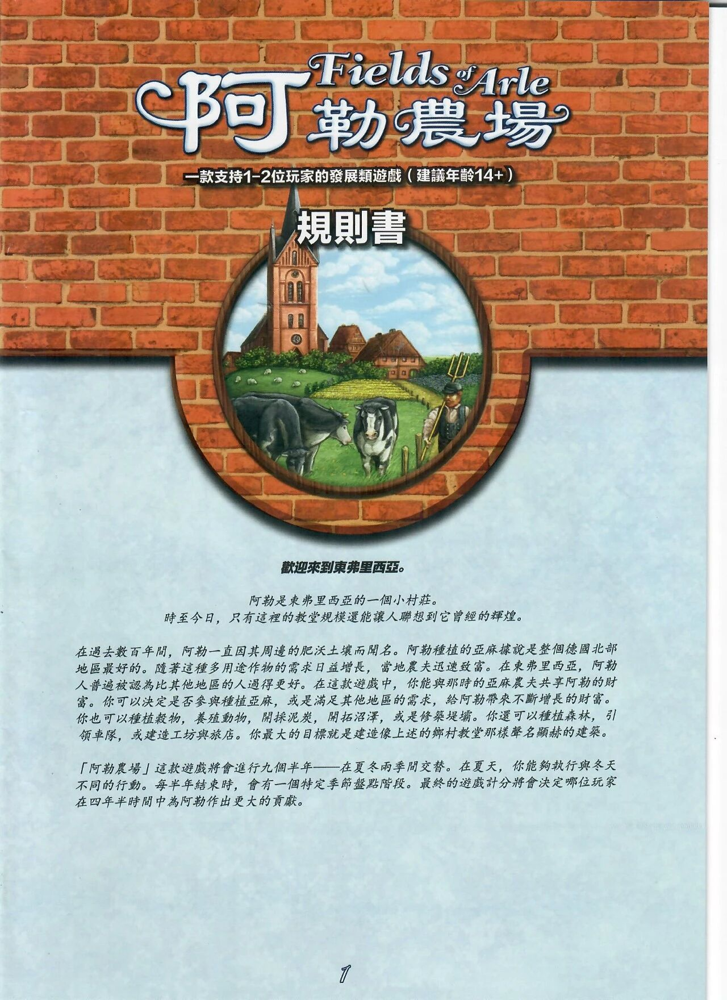
Fields of Arle 阿勒農場
一款支持1-2位玩家的發展類遊戲(建議年齡14+)
規則書
歡迎來到東弗里西亞。
阿勒是東弗里西亞的一個小村莊。
時至今日,只有這裡的教堂規模還能讓人聯想到它曾經的輝煌。
在過去數百年間,阿勒一直因其周邊的肥沃土壤而聞名。阿勒種植的亞麻據說是整個德國北部地區最好的。隨著這種多用途作物的需求日益增長,當地農夫迅速致富。在東弗里西亞,阿勒人普遍被認為比其他地區的人過得更好。在這款遊戲中,你能與那時的亞麻農夫共享阿勒的財富。你可以決定是否參與種植亞麻,或是滿足其他地區的需求,給阿勒帶來不斷增長的財富。你也可以種植穀物,養殖動物,開採泥炭,開拓沼澤,或是修築堤壩。你還可以種植森林,引領車隊,或建造工坊與旅店。你最大的目標就是建造像上述的鄉村教堂那樣聲名顯赫的建築。
「阿勒農場」這款遊戲將會進行九個半年——在夏冬兩季間交替。在夏天,你能夠執行與冬天不同的行動。每半年結束時,會有一個特定季節盤點階段。最終的遊戲計分將會決定哪位玩家在四年半時間中為阿勒作出更大的貢獻。
〔1〕
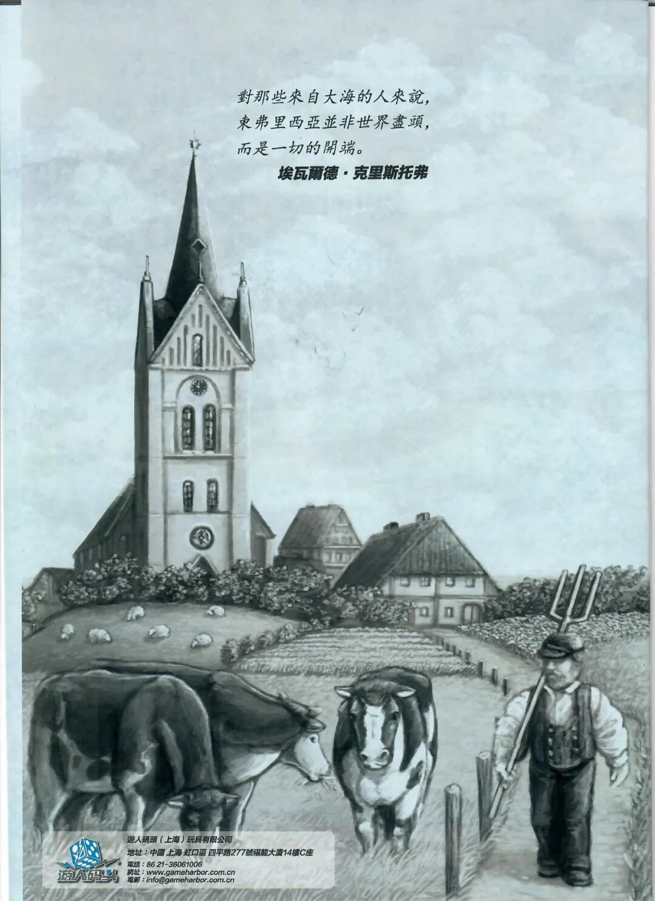
對那些來自大海的人來說,
東弗里西亞並非世界盡頭,
而是一切的開端。
埃瓦爾德·克里斯托弗
遊人碼頭(上海)玩具有限公司
地址:中國 上海 虹口區 四平路277號福龍大廈14樓C座
電話:86 21-36061006
網址:www.gameharbor.com.cn
電郵:info@gameharbor.com.cn
〔无〕
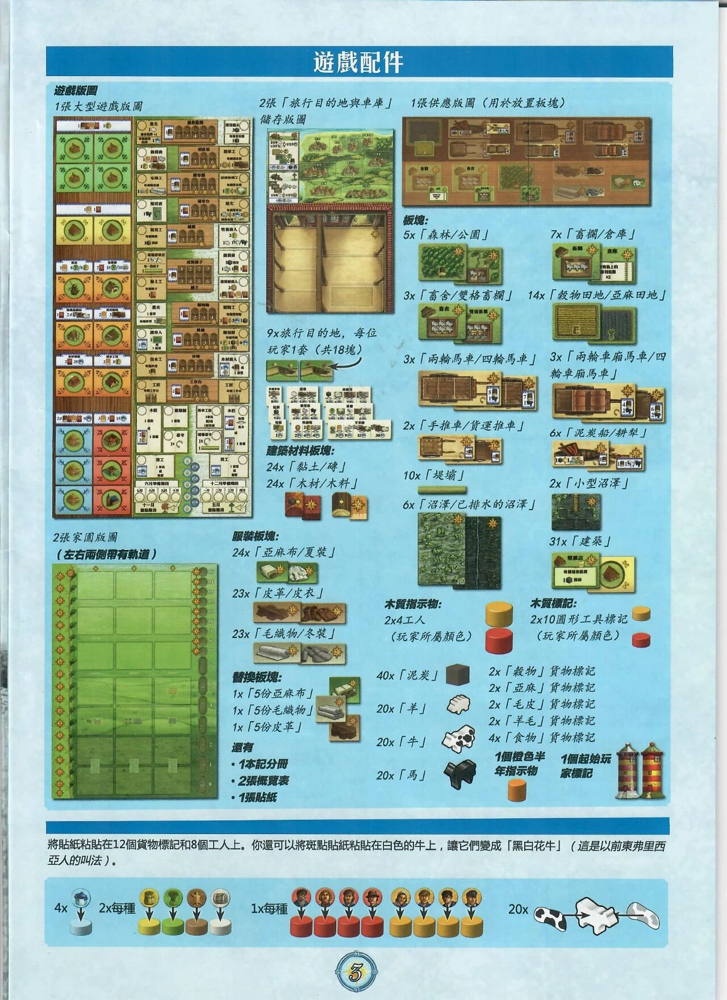
遊戲配件
遊戲版圖
1張大型遊戲版圖
2張家園版圖
(左右兩側帶有軌道)
圖中家園版圖可辨認標注:十一月、五月
2張「旅行目的地與車庫」儲存版圖
9x旅行目的地,每位玩家1套(共18塊)
建築材料板塊:
24x「黏土/磚」
24x「木材/木料」
服裝板塊:
24x「亞麻布/夏裝」
23x「皮革/皮衣」
23x「毛織物/冬裝」
替換板塊:
1x「5份亞麻布」
1x「5份毛織物」
1x「5份皮革」
還有
•1本記分冊
•2張概覽表
•1張貼紙
1張供應版圖(用於放置板塊)
板塊:
5x「森林/公園」
7x「畜欄/倉庫」
圖中板塊標注:畜欄、畜欄
3x「畜舍/雙格畜欄」
圖中板塊標注:畜舍、雙格畜欄
14x「穀物田地/亞麻田地」
3x「兩輪馬車/四輪馬車」
3x「兩輪車廂馬車/四輪車廂馬車」
2x「手推車/貨運推車」
6x「泥炭船/耕犁」
10x「堤壩」
2x「小型沼澤」
6x「沼澤/已排水的沼澤」
31x「建築」
圖中板塊標注:〔?……?〕
木質指示物:
2x4工人
(玩家所屬顏色)
木質標記:
2x10圓形工具標記
(玩家所屬顏色)
40x「泥炭」
20x「羊」
20x「牛」
20x「馬」
2x「穀物」貨物標記
2x「亞麻」貨物標記
2x「毛皮」貨物標記
2x「羊毛」貨物標記
4x「食物」貨物標記
1個橙色半年指示物
1個起始玩家標記
將貼紙粘貼在12個貨物標記和8個工人上。你還可以將斑點貼紙粘貼在白色的牛上,讓它們變成「黑白花牛」(這是以前東弗里西亞人的叫法)。
4x 2x每種 1x每種 20x
〔3〕
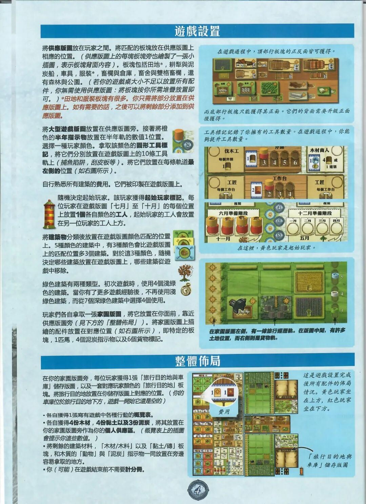
遊戲設置
將供應版圖放在玩家之間。將匹配的板塊放在供應版圖上相應的位置。(供應版圖上的每塊板塊旁也繪製了一張小插圖,表示板塊背面內容)。板塊包括田地,耕犁與泥炭船,車具,服裝,畜欄與倉庫,畜舍與雙格畜欄,還有森林與公園。(若你的遊戲桌大小不足以放置所有配件,你無需使用供應版圖:將板塊按你所需堆疊放置即可。)*\田地和服裝板塊有很多。你只需將部分放置在供應版圖上。如有需要的話,之後可以將剩餘部分添加到供應版圖。**
在遊戲過程中,頂部行板塊的正反面皆可獲得。
〔圖:供應版圖照片;板塊上的小字標註無法辨識〕
而底部行板塊只能獲得其正面。它們的背面需要升級正面後獲得。
將大型遊戲版圖放置在供應版圖旁。接著將橙色的半年指示物放置在半年軌的數值1位置。選擇一種玩家顏色。拿取該顏色的圓形工具標記,將它們分別放置在遊戲版圖上的10條工具軌上(捕魚陷阱,刮皮板等)。將它們放置在每條軌道最左側的位置(如右圖所示)。
工具標記記錄了你擁有的工具數量。在遊戲過程中,你能夠提升工具數量。
〔圖:遊戲版圖局部照片,圖中標註:〕伐木工|每個斧頭|1|斧頭|1|3|4|5|6|木材商人|1|4 或 1 建築|工匠|每個工作台|工作台|2|3|4|工匠|每個工作台|複製|複製
自行熟悉所有建築的費用。它們被印製在遊戲版圖上。
隨機決定起始玩家。該玩家獲得起始玩家標記。每位玩家在遊戲版圖「七月」至「十月」的每個位置上放置1個各自顏色的工人,起始玩家的工人會放置在另一位玩家的工人上方。
〔圖:遊戲版圖局部照片,圖中標註:〕六月準備階段|十一月|十二月準備階段|一月|二月|三月|四月|五月|4|5|6|7|8
在這裡,黃色玩家是起始玩家。
將建築物分類後放置在遊戲版圖顏色匹配的位置上。5種顏色的建築中,有3種顏色會比遊戲版圖上的匹配位置多3個建築。對於這3種顏色,隨機決定哪些建築放置在遊戲版圖上,哪些建築從遊戲中移除。
綠色建築有兩種類型。初次遊戲時,使用4個淺綠色的建築。當你有了更多遊戲經驗後,不再使用淺綠色建築,而從7個深綠色建築中選擇4個使用。
玩家們各自拿取一張家園版圖,將它放置在你面前,靠近供應版圖旁(見下方的「整體佈局」)。將家園版圖上描繪的配件放置在對應位置(如右圖所示),即特定的板塊,1匹馬,4個泥炭指示物以及6個貨物標記。
〔圖:家園版圖照片,圖中標註:〕4|3
在家園版圖左側,有一條旅行經歷軌。在版圖中間,有許多土地位置,而右側則是貨物軌。
整體佈局
在你的家園版圖旁,每位玩家獲得1張「旅行目的地與車庫」儲存版圖,以及一套對應玩家顏色的「旅行目的地」板塊。將旅行目的地放置在你儲存版圖上對應的位置。(你的車庫位於旅行目的地下方,遊戲一開始它還是空的)
- 各自獲得1張寫有遊戲中各種行動的概覽表。
- 各自獲得4份木材,4份黏土以及3份泥炭,將其放置在你的家園版圖旁作為你的個人供應區。(概覽表上的插圖會提示你這些數值。)
- 將剩餘的建築材料,「木材/木料」以及「黏土/磚」板塊,和木質的「動物」與「泥炭」指示物一同放置在旁邊容易拿取的地方。
- 你(可能)在遊戲結束前不需要計分冊。
〔圖:遊戲設置完成後的整體佈局照片,圖中標註:〕1|1|費用
這是遊戲設置完成後所有配件的佈局情況。黃色玩家坐在上方,紅色玩家坐在下方。
「旅行目的地與車庫」儲存版圖
〔4〕
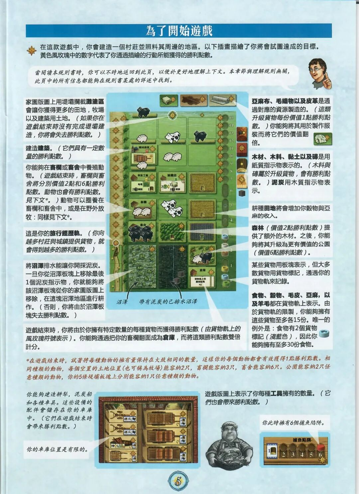
為了開始遊戲
在這款遊戲中,你會建造一個村莊並照料其周邊的地區。以下插畫描繪了你將會試圖達成的目標。黃色風玫瑰中的數字代表了你通過描繪的行動所能獲得的勝利點數。
〔灰底手寫體注,配人物頭像〕當閱讀本規則書時,你可以不時地返回到此頁,以便於更好地理解上下文。本章節與理解規則無關,此頁中的所有信息都能夠在規則書某處的詳述中找到。
〔跨欄插畫:家園版圖與村莊全貌,四周引出如下說明〕
家園版圖上用堤壩攔截灘塗區會讓你獲得更多的田地,牧場以及建築用土地。(如果你在遊戲結束時沒有完成堤壩建造,你將會失去勝利點數。)
建造建築。(它們具有一定數量的勝利點數。)
你能夠在畜欄或畜舍中養殖動物。(遊戲結束時,畜欄與畜舍將分別價值2點和6點勝利點數。動物也會有勝利點數。見下文。)動物可以圈養在畜欄和畜舍中,或是在野外放牧:同樣見下文。
這是你的旅行經歷軌。(你向越多村莊與城鎮提供貨物,就會得到越多的勝利點數。)
將沼澤排水能讓你開採泥炭。一旦你從沼澤板塊上移除最後1個泥炭指示物,你就能夠將該沼澤板塊從你的家園版圖上移除,在這塊沼澤地區進行耕作。(否則,你將由於沼澤板塊失去勝利點數。)
圖注:沼澤;帶有泥炭的1格沼澤
亞麻布、毛織物以及皮革是通過對應的資源製造的。(這類升級貨物每份價值1點勝利點數。)你能夠將其用於製作服裝而將它們的價值翻倍。
木材、木料、黏土以及磚是用紙質指示物表示的。(木料與磚屬於升級貨物,會有勝利點數。)泥炭用木質指示物表示。
耕種田地將會增加你穀物與亞麻的收入。
森林(價值2點勝利點數)提供了額外的木材。之後,你能夠將其升級為更有價值的公園(價值6點勝利點數)。
某些貨物用板塊表示,但大多數貨物用貨物標記,通過你的貨物軌來記錄。
食物、穀物、毛皮、亞麻,以及羊毛都在貨物軌上表示。由於貨物軌的限製,你能夠擁有這些貨物至多各15份。唯一的例外是:食物有2個貨物標記(淺藍色),因此你能夠擁有至多30份食物。
遊戲結束時,你將由於你擁有特定數量的每種貨物而獲得勝利點數(由貨物軌上的風玫瑰符號表示)。你能夠通過把你的畜欄翻面成為倉庫,而將這類勝利點數雙倍計分。
*在遊戲結束時,試著將每種動物的擁有量保持在大致相同的數量,這樣你的每個動物都會有效獲得1點勝利點數。相同種類的動物,每個空置的土地位置(也可稱為牧場)能容納2只,畜欄能容納3只,畜舍能容納6只。公園能容納2只任意種類的動物,你的5條堤壩板塊上分別能容納1只任意種類的動物。
你能夠建造耕犁,泥炭船和各種車具。這些設備的配件會儲存在你的車庫中。(它們在遊戲結束時會帶來勝利點數。)
你的車庫位置是有限的。
〔插畫:車庫內的車具與設備,各附費用標注〕
遊戲版圖上表示了你每種工具擁有的數量。(它們也會帶來勝利點數。)
〔插畫:工具軌「捕魚陷阱」1–6,紅色工具標記停在6〕你此時擁有6個捕魚陷阱。
〔5〕
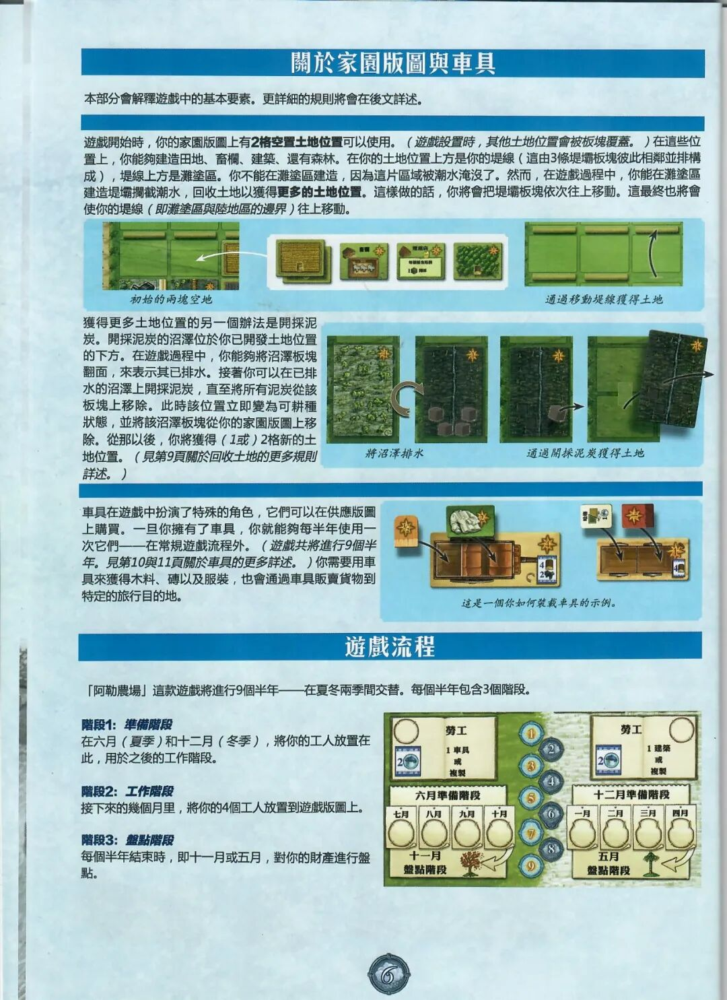
關於家園版圖與車具
本部分會解釋遊戲中的基本要素。更詳細的規則將會在後文詳述。
遊戲開始時,你的家園版圖上有2格空置土地位置可以使用。(遊戲設置時,其他土地位置會被板塊覆蓋。)在這些位置上,你能夠建造田地、畜欄、建築、還有森林。在你的土地位置上方是你的堤線(這由3條堤壩板塊彼此相鄰並排構成),堤線上方是灘塗區。你不能在灘塗區建造,因為這片區域被潮水淹沒了。然而,在遊戲過程中,你能在灘塗區建造堤壩攔截潮水,回收土地以獲得更多的土地位置。這樣做的話,你將會把堤壩板塊依次往上移動。這最終也將會使你的堤線(即灘塗區與陸地區的邊界)往上移動。
圖注:初始的兩塊空地/通過移動堤線獲得土地
獲得更多土地位置的另一個辦法是開採泥炭。開採泥炭的沼澤位於你已開發土地位置的下方。在遊戲過程中,你能夠將沼澤板塊翻面,來表示其已排水。接著你可以在已排水的沼澤上開採泥炭,直至將所有泥炭從該板塊上移除。此時該位置立即變為可耕種狀態,並將該沼澤板塊從你的家園版圖上移除。從那以後,你將獲得(1或)2格新的土地位置。(見第9頁關於回收土地的更多規則詳述。)
圖注:將沼澤排水/通過開採泥炭獲得土地
車具在遊戲中扮演了特殊的角色,它們可以在供應版圖上購買。一旦你擁有了車具,你就能夠每半年使用一次它們——在常規遊戲流程外。(遊戲共將進行9個半年。見第10與11頁關於車具的更多詳述。)你需要用車具來獲得木料、磚以及服裝,也會通過車具販賣貨物到特定的旅行目的地。
圖注:這是一個你如何裝載車具的示例。
遊戲流程
「阿勒農場」這款遊戲將進行9個半年——在夏冬兩季間交替。每個半年包含3個階段。
階段1:準備階段
在六月(夏季)和十二月(冬季),將你的工人放置在此,用於之後的工作階段。
階段2:工作階段
接下來的幾個月里,將你的4個工人放置到遊戲版圖上。
階段3:盤點階段
每個半年結束時,即十一月或五月,對你的財產進行盤點。
圖中標注:勞工|1 車具 或 複製|六月準備階段|七月|八月|九月|十月|十一月 盤點階段|勞工|1 建築 或 複製|十二月準備階段|一月|二月|三月|四月|五月 盤點階段|圓形序號標記:1、2、3、4、5、6、7、8、9
〔6〕
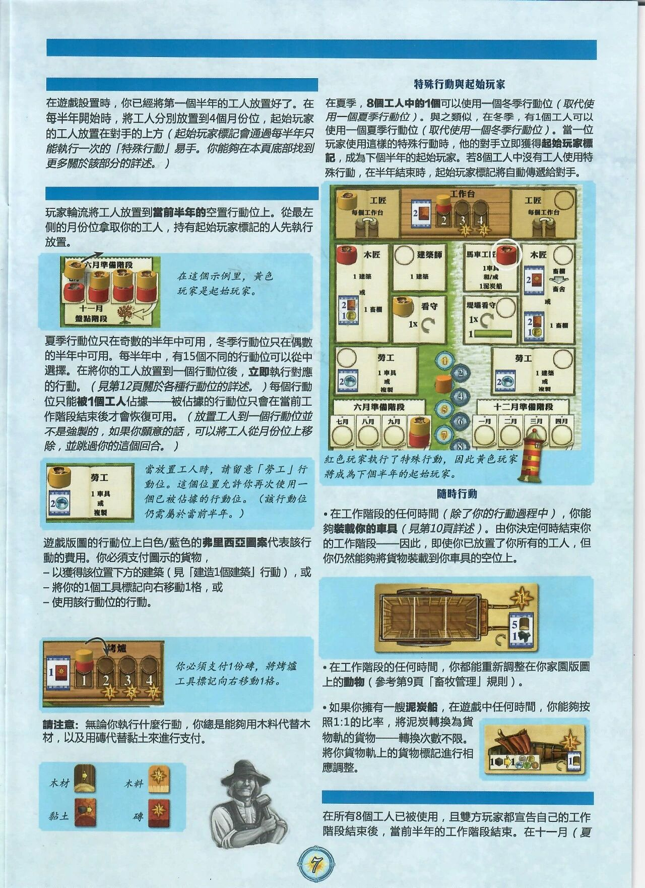
在遊戲設置時,你已經將第一個半年的工人放置好了。在每半年開始時,將工人分別放置到4個月份位,起始玩家的工人放置在對手的上方(起始玩家標記會通過每半年只能執行一次的「特殊行動」易手。你能夠在本頁底部找到更多關於該部分的詳述。)
玩家輪流將工人放置到當前半年的空置行動位上。從最左側的月份位拿取你的工人,持有起始玩家標記的人先執行放置。
圖中標注:六月準備階段|十一月盤點階段
圖注:在這個示例里,黃色玩家是起始玩家。
夏季行動位只在奇數的半年中可用,冬季行動位只在偶數的半年中可用。每半年中,有15個不同的行動位可以從中選擇。在將你的工人放置到一個行動位後,立即執行對應的行動。(見第12頁關於各種行動位的詳述。)每個行動位只能被1個工人佔據——被佔據的行動位只會在當前工作階段結束後才會恢復可用。(放置工人到一個行動位並不是強制的,如果你願意的話,可以將工人從月份位上移除,並跳過你的這個回合。)
圖中標注:勞工|1 車具 或 複製
圖注:當放置工人時,請留意「勞工」行動位。這個位置允許你再次使用一個已被佔據的行動位。(該行動位仍需屬於當前半年。)
遊戲版圖的行動位上白色/藍色的弗里西亞圖案代表該行動的費用。你必須支付顯示的貨物,
-以獲得該位置下方的建築(見「建造1個建築」行動),或
-將你的1個工具標記向右移動1格,或
-使用該行動位的行動。
圖中標注:烤爐|數字格:1、2、3、4
圖注:你必須支付1份磚,將烤爐工具標記向右移動1格。
請注意:無論你執行什麼行動,你總是能夠用木料代替木材,以及用磚代替黏土來進行支付。
圖中標注:木材|木料|黏土|磚
特殊行動與起始玩家
在夏季,8個工人中的1個可以使用一個冬季行動位(取代使用一個夏季行動位)。與之類似,在冬季,有1個工人可以使用一個夏季行動位(取代使用一個冬季行動位)。當一位玩家使用這樣的特殊行動時,他的對手立即獲得起始玩家標記,成為下個半年的起始玩家。若8個工人中沒有工人使用特殊行動,在半年結束時,起始玩家標記將自動傳遞給對手。
圖中標注:工匠(每個工作台)|工作台|木匠(1 建築 或 1 畜欄)|建築師(1 建築)|看守(1x)|馬車工〔?〕(1車具 租/或 1泥炭船)|堤壩看守(1x、1)|木匠(畜欄、畜舍,或 1 畜欄)|勞工(1 車具 或 複製)|勞工(1 建築 或 複製)|六月準備階段|十二月準備階段|七月、八月、九月、十月|一月、二月、三月、四月|序號圓片:1–9(部分被工人圓片遮擋)
圖注:紅色玩家執行了特殊行動,因此黃色玩家將成為下個半年的起始玩家。
同時行動
•在工作階段的任何時間(除了你的行動過程中),你能夠裝載你的車具(見第10頁詳述)。由你決定何時結束你的工作階段——因此,即使你已放置了你所有的工人,但你仍然能夠將貨物裝載到你車具的空位上。
•在工作階段的任何時間,你都能重新調整在你家園版圖上的動物(參考第9頁「畜牧管理」規則)。
•如果你擁有一艘泥炭船,在遊戲中任何時間,你能夠按照1:1的比率,將泥炭轉換為貨物軌的貨物——轉換次數不限。將你貨物軌上的貨物標記進行相應調整。
在所有8個工人已被使用,且雙方玩家都宣告自己的工作階段結束後,當前半年的工作階段結束。在十一月(夏
〔7〕
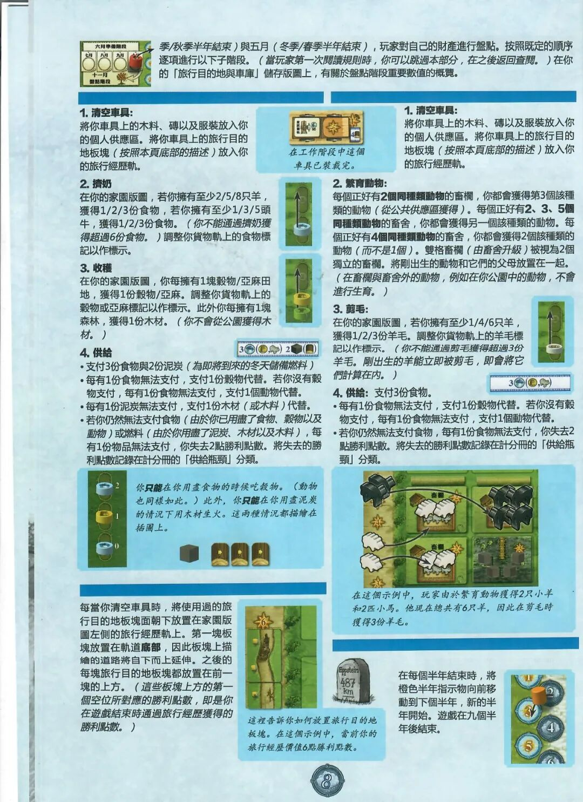
季/秋季半年結束)與五月(冬季/春季半年結束),玩家對自己的財產進行盤點。按照既定的順序逐項進行以下子階段。(當玩家第一次閱讀規則時,你可以跳過本部分,在之後返回查閱。)在你的「旅行目的地與車庫」儲存版圖上,有關於盤點階段重要數值的概覽。
圖中標注:六月準備階段/七月/八月/九月/十一月/盤點階段
1. 清空車具:
將你車具上的木料、磚以及服裝放入你的個人供應區。將你車具上的旅行目的地板塊(按照本頁底部的描述)放入你的旅行經歷軌。
2. 擠奶
在你的家園版圖,若你擁有至少2/5/8隻羊,獲得1/2/3份食物,若你擁有至少1/3/5頭牛,獲得1/2/3份食物。(你不能通過擠奶獲得超過6份食物。)調整你貨物軌上的食物標記以作標示。
3. 收穫
在你的家園版圖,你每擁有1塊穀物/亞麻田地,獲得1份穀物/亞麻。調整你貨物軌上的穀物或亞麻標記以作標示。此外你每擁有1塊森林,獲得1份木材。(你不會從公園獲得木材。)
4. 供給
•支付3份食物與2份泥炭(為即將到來的冬天儲備燃料)。
•每有1份食物無法支付,支付1份穀物代替。若你沒有穀物支付,每有1份食物無法支付,支付1個動物代替。
•每有1份泥炭無法支付,支付1份木材(或木料)代替。
•若你仍然無法支付食物(由於你已用盡了食物、穀物以及動物)或燃料(由於你用盡了泥炭、木材以及木料),每有1份物品無法支付,你失去2點勝利點數。將失去的勝利點數記錄在計分冊的「供給瓶頸」分類。
你只能在你用盡食物的時候吃穀物。(動物也同樣如此。)此外,你只能在你用盡泥炭的情況下用木材生火。這兩種情況都描繪在插圖上。
每當你清空車具時,將使用過的旅行目的地板塊面朝下放置在家園版圖左側的旅行經歷軌上。第一塊板塊放置在軌道底部,因此板塊上描繪的道路將自下而上延伸。之後的每塊旅行目的地板塊都放置在前一塊的上方。(這些板塊上方的第一個空位所對應的勝利點數,即是你在遊戲結束時通過旅行經歷獲得的勝利點數。)
圖注:這裡告訴你如何放置旅行目的地板塊。在這個示例中,當前你的旅行經歷價值6點勝利點數。
1. 清空車具:
將你車具上的木料、磚以及服裝放入你的個人供應區。將你車具上的旅行目的地板塊(按照本頁底部的描述)放入你的旅行經歷軌。
圖注:在工作階段中這個車具已裝載完。
2. 繁育動物:
每個正好有2個同種類動物的畜欄,你都會獲得第3個該種類的動物(從公共供應區獲得)。每個正好有2、3、5個同種類動物的畜舍,你都會獲得另一個該種類的動物。每個正好有4個同種類動物的畜舍,你都會獲得2個該種類的動物(而不是1個)。雙格畜欄(由畜舍升級)被視為2個獨立的畜欄。將剛出生的動物和它們的父母放置在一起。(在畜欄與畜舍外的動物,例如在你公園中的動物,不會進行生育。)
3. 剪毛:
在你的家園版圖,若你擁有至少1/4/6隻羊,獲得1/2/3份羊毛。調整你貨物軌上的羊毛標記以作標示。(你不能通過剪毛獲得超過3份羊毛。剛出生的羊能立即被剪毛,即會將它們計算在內。)
4. 供給: 支付3份食物。
•每有1份食物無法支付,支付1份穀物代替。若你沒有穀物支付,每有1份食物無法支付,支付1個動物代替。
•若你仍然無法支付食物,每有1份食物無法支付,你失去2點勝利點數。將失去的勝利點數記錄在計分冊的「供給瓶頸」分類。
圖中板塊標注:畜欄、畜欄
圖注:在這個示例中,玩家由於繁育動物獲得2隻小羊和2匹小馬。他現在總共有6隻羊,因此在剪毛時獲得3份羊毛。
在每個半年結束時,將橙色半年指示物向前移動到下個半年,新的半年開始。遊戲在九個半年後結束。
圖中標注:Epstein II 487 km
〔8〕
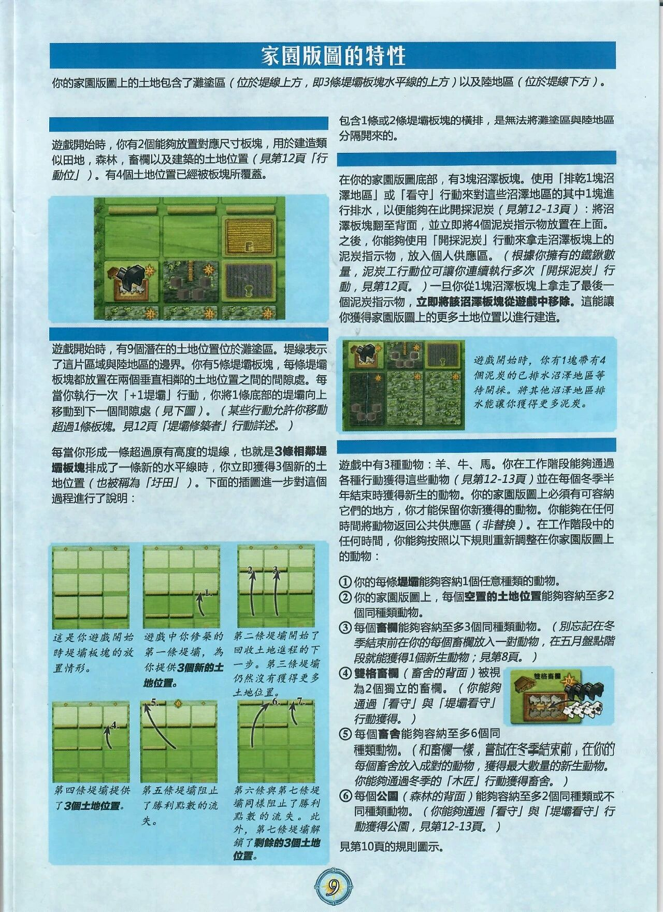
家園版圖的特性
你的家園版圖上的土地包含了灘塗區(位於堤線上方,即3條堤壩板塊水平線的上方)以及陸地區(位於堤線下方)。
遊戲開始時,你有2個能夠放置對應尺寸板塊,用於建造類似田地,森林,畜欄以及建築的土地位置(見第12頁「行動位」)。有4個土地位置已經被板塊所覆蓋。
遊戲開始時,有9個潛在的土地位置位於灘塗區。堤線表示了這片區域與陸地區的邊界。你有5條堤壩板塊,每條堤壩板塊都放置在兩個垂直相鄰的土地位置之間的間隙處。每當你執行一次「+1堤壩」行動,你將1條底部的堤壩向上移動到下一個間隙處(見下圖)。(某些行動允許你移動超過1條板塊。見12頁「堤壩修築者」行動詳述。)
每當你形成一條超過原有高度的堤線,也就是3條相鄰堤壩板塊排成了一條新的水平線時,你立即獲得3個新的土地位置(也被稱為「圩田」)。下面的插圖進一步對這個過程進行了說明:
圖注:這是你遊戲開始時堤壩板塊的放置情形。
圖注:遊戲中你修築的第一條堤壩,為你提供3個新的土地位置。
圖注:第二條堤壩開始了回收土地進程的下一步。第三條堤壩仍然沒有獲得更多土地位置。
圖注:第四條堤壩提供了3個土地位置。
圖注:第五條堤壩阻止了勝利點數的流失。
圖注:第六條與第七條堤壩同樣阻止了勝利點數的流失。此外,第七條堤壩解鎖了剩餘的3個土地位置。
包含1條或2條堤壩板塊的橫排,是無法將灘塗區與陸地區分隔開來的。
在你的家園版圖底部,有3塊沼澤板塊。使用「排乾1塊沼澤地區」或「看守」行動來對這些沼澤地區的其中1塊進行排水,以便能夠在此開採泥炭(見第12-13頁):將沼澤板塊翻至背面,並立即將4個泥炭指示物放置在上面。之後,你能夠使用「開採泥炭」行動來拿走沼澤板塊上的泥炭指示物,放入個人供應區。(根據你擁有的鐵鍬數量,泥炭工行動位可讓你連續執行多次「開採泥炭」行動,見第12頁。)一旦你從1塊沼澤板塊上拿走了最後一個泥炭指示物,立即將該沼澤板塊從遊戲中移除。這能讓你獲得家園版圖上的更多土地位置以進行建造。
圖注:遊戲開始時,你有1塊帶有4個泥炭的已排水沼澤地區等待開採。將其他沼澤地區排水能讓你獲得更多泥炭。
遊戲中有3種動物:羊、牛、馬。你在工作階段能夠通過各種行動獲得這些動物(見第12-13頁)並在每個冬季半年結束時獲得新生的動物。你的家園版圖上必須有可容納它們的地方,你才能保留你新獲得的動物。你能夠在任何時間將動物返回公共供應區(非替換)。在工作階段中的任何時間,你能夠按照以下規則重新調整在你家園版圖上的動物:
①你的每條堤壩能夠容納1個任意種類的動物。
②你的家園版圖上,每個空置的土地位置能夠容納至多2個同種類動物。
③每個畜欄能夠容納至多3個同種類動物。(別忘記在冬季結束前在你的每個畜欄放入一對動物,在五月盤點階段就能獲得1個新生動物;見第8頁。)
④雙格畜欄(畜舍的背面)被視為2個獨立的畜欄。(你能夠通過「看守」與「堤壩看守」行動獲得。)
圖中板塊標注:雙格畜欄
⑤每個畜舍能夠容納至多6個同種類動物。(和畜欄一樣,嘗試在冬季結束前,在你的每個畜舍放入成對的動物,獲得最大數量的新生動物。你能夠通過冬季的「木匠」行動獲得畜舍。)
⑥每個公園(森林的背面)能夠容納至多2個同種類或不同種類動物。(你能夠通過「看守」與「堤壩看守」行動獲得公園,見第12-13頁。)
見第10頁的規則圖示。
〔9〕
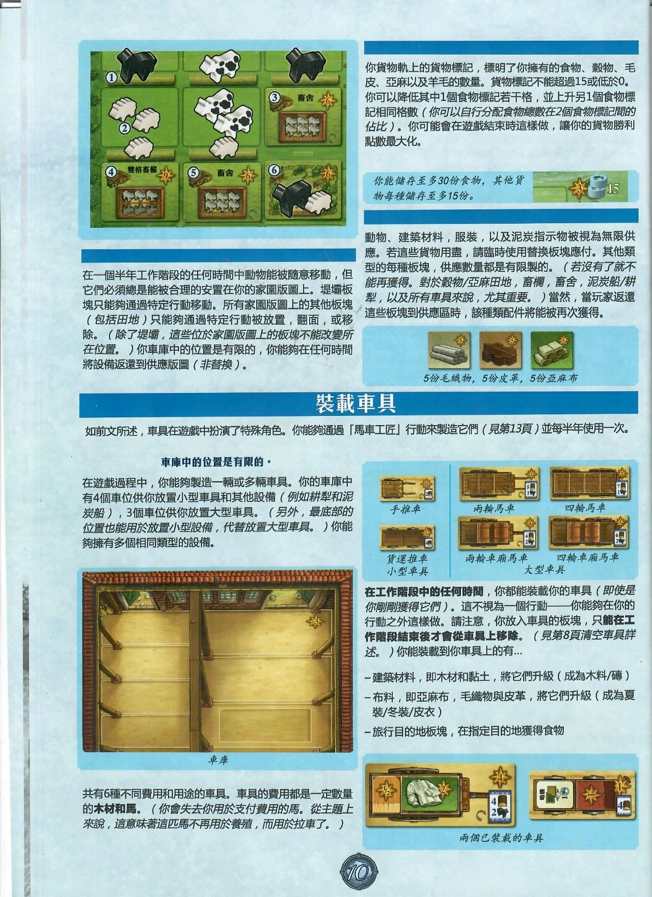
〔插图：家園版圖局部，展示動物圖塊與畜欄／畜舍板塊，標號①－⑥〕
③ 畜舍
④ 雙格畜欄
⑤ 畜舍
（①、②、⑥ 為動物圖塊與欄位，無文字標註。）
在一個半年工作階段的任何時間中動物能被隨意移動，但它們必須總是能被合理的安置在你的家園版圖上。堤壩板塊只能夠通過特定行動移動。所有家園版圖上的其他板塊（包括田地）只能夠通過特定行動被放置，翻面，或移除。（除了堤壩，這些位於家園版圖上的板塊不能改變所在位置。）你車庫中的位置是有限的，你能夠在任何時間將設備返還到供應版圖（非替換）。
你貨物軌上的貨物標記，標明了你擁有的食物、穀物、毛皮、亞麻以及羊毛的數量。貨物標記不能超過15或低於0。你可以降低其中1個食物標記若干格，並上升另1個食物標記相同格數（你可以自行分配食物總數在2個食物標記間的佔比）。你可能會在遊戲結束時這樣做，讓你的貨物勝利點數最大化。
你能儲存至多30份食物，其他貨物每種儲存至多15份。
動物、建築材料，服裝，以及泥炭指示物被視為無限供應。若這些貨物用盡，請臨時使用替換板塊應付。其他類型的每種板塊，供應數量都是有限制的。（若沒有了就不能再獲得。對於穀物/亞麻田地，畜欄，畜舍，泥炭船/耕犁，以及所有車具來說，尤其重要。）當然，當玩家返還這些板塊到供應區時，該種類配件將能被再次獲得。
〔插图：三種布料圖示〕
5份毛織物，5份皮革，5份亞麻布
裝載車具
如前文所述，車具在遊戲中扮演了特殊角色。你能夠通過「馬車工匠」行動來製造它們（見第13頁）並每半年使用一次。
車庫中的位置是有限的。
在遊戲過程中，你能夠製造一輛或多輛車具。你的車庫中有4個車位供你放置小型車具和其他設備（例如耕犁和泥炭船），3個車位供你放置大型車具。（另外，最底部的位置也能用於放置小型設備，代替放置大型車具。）你能夠擁有多個相同類型的設備。
〔插图：車庫內部〕
車庫
共有6種不同費用和用途的車具。車具的費用都是一定數量的木材和馬。（你會失去你用於支付費用的馬。從主題上來說，這意味著這匹馬不再用於養殖，而用於拉車了。）
〔插图：六種車具圖示〕
手推車
兩輪馬車
四輪馬車
貨運推車
小型車具
兩輪車廂馬車
四輪車廂馬車
大型車具
在工作階段中的任何時間，你都能裝載你的車具（即使是你剛剛獲得它們）。這不視為一個行動——你能夠在你的行動之外這樣做。請注意，你放入車具的板塊，只能在工作階段結束後才會從車具上移除。（見第8頁清空車具詳述。）你能裝載到你車具上的有…
–建築材料，即木材和黏土，將它們升級（成為木料/磚）
–布料，即亞麻布，毛織物與皮革，將它們升級（成為夏裝/冬裝/皮衣）
–旅行目的地板塊，在指定目的地獲得食物
〔插图：兩個裝載了板塊的車具示例〕
兩個已裝載的車具
〔10〕
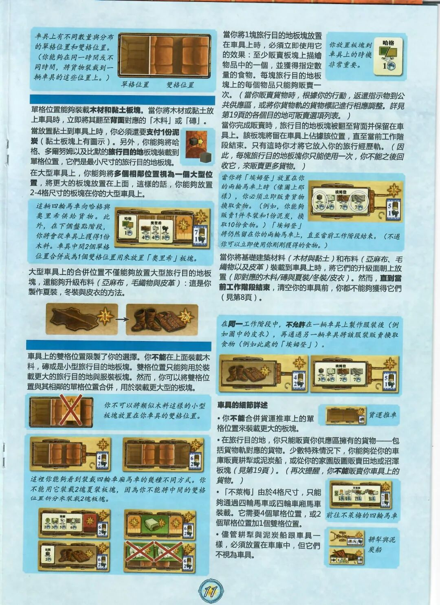
車具上有不同數量與分布的單格位置和雙格位置。（你能夠在同一時間或不同時間，將貨物裝載到一輛車具的這些位置上。）
〔插图：車具板塊照片，展示格位〕
單格位置 雙格位置
單格位置能夠裝載木材和黏土板塊。當你將木材或黏土放上車具時，立即將其翻至背面對應的「木料」或「磚」。當放置黏土到車具上時，你必須還要支付1份泥炭（黏土板塊上有圖示）。另外，你能夠將哈格、多爾努姆以及比默的旅行目的地板塊裝載到單格位置，它們是最小尺寸的旅行目的地板塊。
在大型車具上，你能夠將多個相鄰位置視為一個大型位置，將更大的板塊放置在上面，這樣的話，你能夠放置2-4格尺寸的板塊在你的大型車具上。
〔插图：裝載了哈格與奧里希板塊的四輪馬車，圖中板塊標註「哈格」「奧里希」〕
這輛四輪馬車向哈格與奧里希供給貨物。此外，在下個盤點階段，你將會從車具上獲得1份木料。車具中間2個單格位置合併成為1個雙格位置用來放置「奧里希」板塊。
大型車具上的合併位置不僅能夠放置大型旅行目的地板塊，還能夠升級布料（亞麻布，毛織物與皮革）：這是你製作夏裝，冬裝與皮衣的方法。
〔插图：皮革（1）升級為皮衣（2½）示例〕
車具上的雙格位置限制了你的選擇。你不能在上面裝載木材，磚或是小型旅行目的地板塊。雙格位置只能夠用於裝載更大的旅行目的地與服裝板塊。然而，你可以將雙格位置與其相鄰的單格位置合併，用於裝載更大型的板塊。
〔插图：車具雙格位置上放置木料被紅叉禁止〕
你不可以將類似木料這樣的小型板塊放置在你車具的雙格位置。
〔插图：兩個裝載示例，四輪車廂馬車與四輪馬車〕
〔插图：四個裝載示例，其中一個被紅叉禁止〕
這裡你能夠看到裝載四輪車廂馬車的幾種不同方式。你不能用它裝載2塊夏裝板塊，因為你不能將中間的雙格位置拆分來裝載2塊板塊。
當你將1塊旅行目的地板塊放置在車具上時，必須立即使用它的效果：至少販賣板塊上描繪物品中的一個，並獲得指定數量的食物。每塊旅行目的地板塊上的每個物品只能夠販賣一次。（當你販賣貨物時，根據你的行動，返還指示物到公共供應區，或將你貨物軌的貨物標記進行相應調整。詳見第19頁的各個目的地可販賣選項列表。）
〔插图：「哈格」旅行目的地板塊〕
你放置板塊到車具上的時機非常重要。
當你完成販賣時，旅行目的地板塊被翻至背面并保留在車具上。該板塊將留在車具上佔據該位置，直至當前工作階段結束。只有這時你才將它放入你的旅行經歷軌。（因此，每塊旅行目的地板塊你只能使用一次，你不能之後回收它，來販賣更多貨物。）
〔插图：裝載了「埃姆登」板塊的兩輪馬車〕
當你將「埃姆登」放置在你的兩輪馬車上時（像圖上那樣），你必須立即販賣貨物換取食物。（例如，你能夠販賣1件冬裝和1份泥炭，換取10份食物。）「埃姆登」將仍然留在你的兩輪馬車上，直至當前工作階段結束。（不過你可以立即使用你剛剛獲得的食物。）
當你將基礎建築材料（木材與黏土）和布料（亞麻布、毛織物以及皮革）裝載到車具上時，將它們的升級面朝上放置（即對應的木料/磚與夏裝/冬裝/皮衣）。然而，直到當前工作階段結束，清空你的車具前，你都不能夠獲得它們（見第8頁）。
〔插图：裝載皮衣的車具與裝載「埃姆登」的車具〕
在同一工作階段中，不允許在一輛車具上製作服裝後（例如圖中的皮衣），再通過另一輛車具將該服裝販賣換取食物（例如此處的「埃姆登」）。
車具的細節詳述
- 你不能合併貨運推車上的單格位置來裝載更大的板塊。
〔插图：貨運推車〕
貨運推車
- 在旅行目的地，你只能販賣你供應區擁有的貨物——包括貨物軌對應的貨物。少數特殊情況下，你能夠從你的車庫販賣耕犁或泥炭船，或從你的家園版圖販賣田地或沼澤板塊（見第19頁）。（再次提醒，你不能販賣你車具上的貨物。）
- 「不萊梅」由於4格尺寸，只能夠通過四輪馬車或四輪車廂馬車裝載。它需要4個單格位置，或2個單格位置加1個雙格位置。
〔插图：裝載「不萊梅」板塊的四輪馬車〕
前往不萊梅的四輪馬車
- 儘管耕犁與泥炭船跟車具一樣，必須放置在車庫中，但它們不視為車具。
〔插图：耕犁與泥炭船圖示〕
耕犁與泥炭船
〔11〕
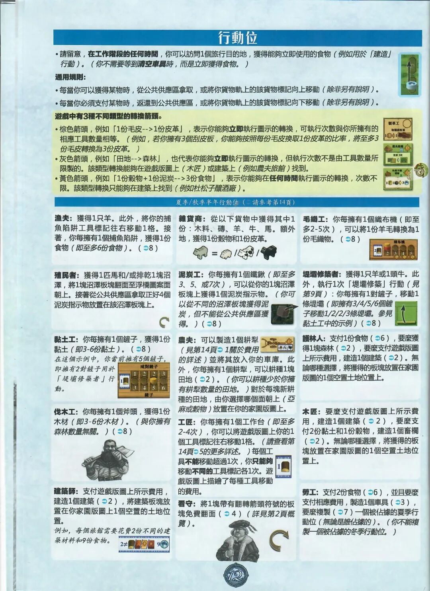
行動位
* 請留意,在工作階段的任何時間,你可以訪問1個旅行目的地,獲得能夠立即使用的食物(例如用於「建造」行動)。(你不需要等到清空車具時,而是立即獲得食物。)
〔右侧插图:绿色图块上有向上箭头与白色圆片,无文字〕
通用規則:
* 每當你可以獲得某物時,從公共供應區拿取,或將你貨物軌上的該貨物標記向上移動(除非另有說明)。
* 每當你必須支付某物時,返還到公共供應區,或將你貨物軌上的該貨物標記向下移動(除非另有說明)。
遊戲中有3種不同類型的轉換箭頭。
* 棕色箭頭,例如「1份毛皮-->1份皮革」,表示你能夠立即執行圖示的轉換,可執行次數與你所擁有的相應工具數量相等。(例如,若你擁有3個刮皮板,你能夠按照每份毛皮換取1份皮革的比率,將至多3份毛皮轉換為3份皮革。)
* 灰色箭頭,例如「田地-->森林」,也代表你能夠立即執行圖示的轉換,但執行次數不是由工具數量所限製的。該類型轉換能夠在遊戲版圖上(木匠)或建築上(例如農夫旅館)找到。
* 黃色箭頭,例如「1份穀物+1份泥炭-->3份食物」,表示你能夠在任何時間執行圖示的轉換,次數不限。該類型轉換只能夠在建築上找到(例如杜松子釀酒廠)。
〔本框右侧图示,由上至下三张卡片:①「製革工/每張刮皮板/1〔圖示〕⟶1〔圖示〕」②〔?……?〕③「杜松子釀酒廠/1〔穀物〕1〔泥炭〕⟶3〔食物〕」〕
夏季/秋季半年行動位(→ 請參考第14頁)
漁夫: 獲得1隻羊。此外,將你的捕魚陷阱工具標記往右移動1格。接著,你每擁有1個捕魚陷阱,獲得1份食物(即至多6份食物)。(→8)
雜貨商: 從以下貨物中獲得其中1份:木料、磚、羊、牛、馬。額外地,獲得1份穀物和1份皮革。
〔插图:一只动物模型 = 三种动物图样(白羊/花牛/黑马),无文字〕
毛織工: 你每擁有1個織布機(即至多2-5次),可以將1份羊毛轉換為1份毛織物。(→8)
〔图示标注:織布機;左端有「2」工具標記,右侧槽位数字 2、3、4、5〕
殖民者: 獲得1匹馬和/或排乾1塊沼澤,將1塊沼澤板塊翻面至浮橋圖案面朝上。接著從公共供應區拿取正好4個泥炭指示物放置在該沼澤板塊上。
〔插图:翻转箭头,无文字〕
泥炭工: 你每擁有1個鐵鍬(即至多3、5、或7次),可以從你的1塊沼澤板塊上獲得1個泥炭指示物。(你可以從不同的沼澤板塊獲得泥炭,但不能從公共供應區獲得。)(→8)
〔插图:泥炭指示物,无文字〕
堤壩修築者: 獲得1隻羊或1頭牛。此外,執行1次「堤壩修築」行動(見第9頁):你每擁有1對鍊子,移動1條堤壩(即擁有3/4/5/6個鍊子移動1/2/2/3條堤壩。參見黏土工中的示例)(→8)
〔插图:绿色堤壩图块上的弯曲向上箭头,无文字〕
黏土工: 你每擁有1個鍊子,獲得1份黏土(即3-6份黏土)。(→8)
在這個示例中,你當前擁有5個鍊子,即擁有2對鍊子用於「堤壩修築者」行動。
〔图示标注:成對鍊子;上排数字 1、2、2、3;鍊子;下排数字 3、4、5、6〕
農夫: 可以製造1個耕犁(見第14頁→1關於費用的詳述)並將其放入你的車庫。此外,你每擁有1個耕犁,可以耕種1塊田地(→2)。(你可以耕種少於你擁有耕犁數量的田地。)對於每塊新耕種的田地,由你選擇哪個面朝上(亞麻或穀物)放置在你的家園版圖上。
〔插图:耕犁,图块角上价格标签文字〔?……?〕〕
護林人: 支付1份食物(→6),要麼獲得1塊森林(→2),要麼支付遊戲版圖上所示費用,建造1個建築(→2)。無論哪種選擇,將獲得的板塊放置在家園版圖的1個空置土地位置上。
伐木工: 你每擁有1個斧頭,獲得1份木材(即3-6份木材)。(與你擁有森林數量無關。)(→8)
〔插图:伐木工肖像,无文字〕
工匠: 你每擁有1個工作台(即至多2-4次),你可以將遊戲版圖上你的1個工具標記往右移動1格。(請查看第14頁→5的更多詳述。)每個工具不能移動超過1次,你只能夠移動不同的工具標記各1次。遊戲版圖上描繪了每種工具移動的費用。
〔图示标注:工具標記「1」,无其他文字〕
木匠: 要麼支付遊戲版圖上所示費用,建造1個建築(→2),要麼支付2份黏土和1份穀物,建造1個畜欄(→2)。無論哪種選擇,將獲得的板塊放置在家園版圖的1個空置土地位置上。
建築師: 支付遊戲版圖上所示費用,建造1個建築(→2),將建築板塊放置在你家園版圖上1個空置的土地位置。
例如,每個旅館需要花費2份不同的建築材料和9份食物。
〔图示标注:「2≠」+四种建筑材料图样+「9」+食物图样〕
看守: 將1塊帶有翻轉箭頭符號的板塊免費翻面(→4)(詳見第2頁概覽)。
〔插图:男子肖像与翻转箭头,无文字〕
劈工: 支付2份食物(→6),並且要麼支付相應費用,製造1個車具(→3),要麼複製(→7)一個被佔據的夏季行動位(無論是誰佔據的)。(你不能複製一個被佔據的冬季行動位。)
〔12〕
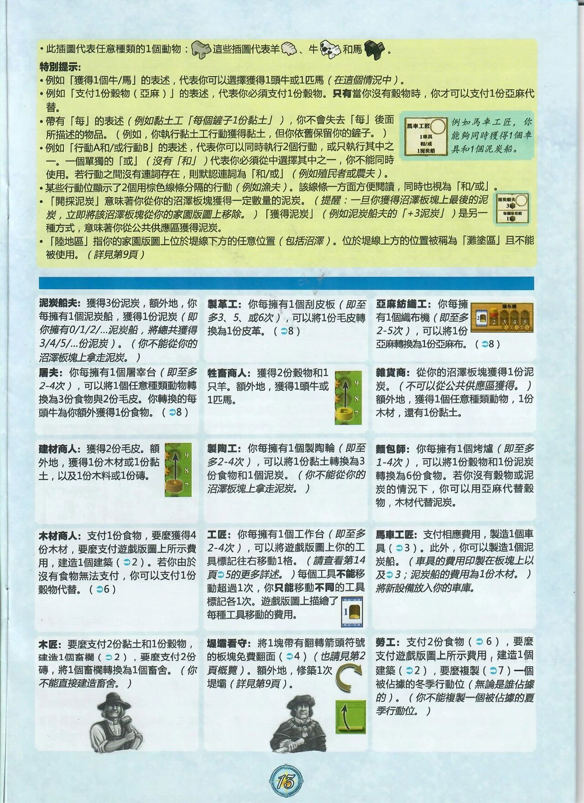
* 此插圖代表任意種類的1個動物:〔動物圖〕這些插圖代表羊〔圖〕、牛〔圖〕和馬〔圖〕。
特別提示:
* 例如「獲得1個牛/馬」的表述,代表你可以選擇獲得1頭牛或1匹馬(在這個情況中)。
* 例如「支付1份穀物(亞麻)」的表述,代表你必須支付1份穀物。只有當你沒有穀物時,你才可以支付1份亞麻代替。
* 帶有「每」的表述(例如黏土工「每個鍊子1份黏土」),你不會失去「每」後面所描述的物品。(例如,你執行黏土工行動獲得黏土,但你依舊保留你的鍊子。)
* 例如「行動A和/或行動B」的表述,代表你可以同時執行2個行動,或只執行其中之一。一個單獨的「或」(沒有「和」)代表你必須從中選擇其中之一,你不能同時使用。若行動之間沒有連詞存在,則默認連詞為「和/或」(例如殖民者或農夫)。
〔本条右侧图示:卡片「馬車工匠/1車具/和/或/1泥炭船」,旁有绿色底楷体注文:〕
例如馬車工匠,你能夠同時獲得1個車具和1個泥炭船。
* 某些行動位顯示了2個用棕色線條分隔的行動(例如漁夫)。該線條一方面方便閱讀,同時也視為「和/或」。
* 「開採泥炭」意味著你從你的沼澤板塊獲得一定數量的泥炭。(提醒:一旦你獲得沼澤板塊上最後的泥炭,立即將該沼澤板塊從你的家園版圖上移除。)「獲得泥炭」(例如泥炭船夫的「+3泥炭」)是另一種方式,意味著你從公共供應區獲得泥炭。
〔本条右侧图示:卡片「泥炭船夫/3〔泥炭〕/每額外泥炭船/1〔泥炭〕」〕
* 「陸地區」指你的家園版圖上位於堤線下方的任意位置(包括沼澤)。位於堤線上方的位置被稱為「灘塗區」且不能被使用。(詳見第9頁)
〔此处为一条无文字的蓝色分隔横条〕
泥炭船夫: 獲得3份泥炭,額外地,你每擁有1個泥炭船,獲得1份泥炭(即你擁有0/1/2/...泥炭船,將總共獲得3/4/5/...份泥炭)。(你不能從你的沼澤板塊上拿走泥炭。)
製革工: 你每擁有1個刮皮板(即至多3、5、或6次),可以將1份毛皮轉換為1份皮革。(→8)
亞麻紡織工: 你每擁有1個織布機(即至多2-5次),可以將1份亞麻轉換為1份亞麻布。(→8)
〔图示标注:織布機;左端有「2」工具標記,右侧槽位数字 2、3、4、5〕
屠夫: 你每擁有1個屠宰台(即至多2-4次),可以將1個任意種類動物轉換為3份食物與2份毛皮。你轉換的每頭牛為你額外獲得1份食物。(→8)
牲畜商人: 獲得2份穀物和1隻羊。額外地,獲得1頭牛或1匹馬。
〔图示标注:游戏版图局部,向上箭头,数字 9、8、7〕
雜貨商: 從你的沼澤板塊獲得1份泥炭。(不可以從公共供應區獲得。)額外地,獲得1個任意種類動物,1份木材,還有1份黏土。
建材商人: 獲得2份毛皮。額外地,獲得1份木材或1份黏土,以及1份木料或1份磚。
〔图示标注:游戏版图局部,向上箭头,数字 9、8、7〕
製陶工: 你每擁有1個製陶輪(即至多2-4次),可以將1份黏土轉換為3份食物和1個泥炭。(你不能從你的沼澤板塊上拿走泥炭。)
麵包師: 你每擁有1個烤爐(即至多1-4次),可以將1份穀物和1份泥炭轉換為6份食物。若你沒有穀物或泥炭的情況下,你可以用亞麻代替穀物,木材代替泥炭。
木材商人: 支付1份食物,要麼獲得4份木材,要麼支付遊戲版圖上所示費用,建造1個建築(→2)。若你由於沒有食物無法支付,你可以支付1份穀物代替。(→6)
工匠: 你每擁有1個工作台(即至多2-4次),可以將遊戲版圖上你的工具標記往右移動1格。(請查看第14頁→5的更多詳述。)每個工具不能移動超過1次,你只能移動不同的工具標記各1次。遊戲版圖上描繪了每種工具移動的費用。
〔图示标注:工具標記「1」,无其他文字〕
馬車工匠: 支付相應費用,製造1個車具(→3)。此外,你可以製造1個泥炭船。(車具的費用印製在板塊上以及→3;泥炭船的費用為1份木材。)將新設備放入你的車庫。
木匠: 要麼支付2份黏土和1份穀物,建造1個畜欄(→2),要麼支付2份磚,將1個畜欄轉換為1個畜舍。(你不能直接建造畜舍。)
〔插图:戴帽工匠肖像,无文字〕
堤壩看守: 將1塊帶有翻轉箭頭符號的板塊免費翻面(→4)(也請見第2頁概覽)。額外地,修築1次堤壩(詳見第9頁)。
〔插图:男子肖像、翻转箭头与绿色堤壩图块,无文字〕
劈工: 支付2份食物(→6),要麼支付遊戲版圖上所示費用,建造1個建築(→2),要麼複製(→7)一個被佔據的冬季行動位(無論是誰佔據的)。(你不能複製一個被佔據的夏季行動位。)
〔13〕
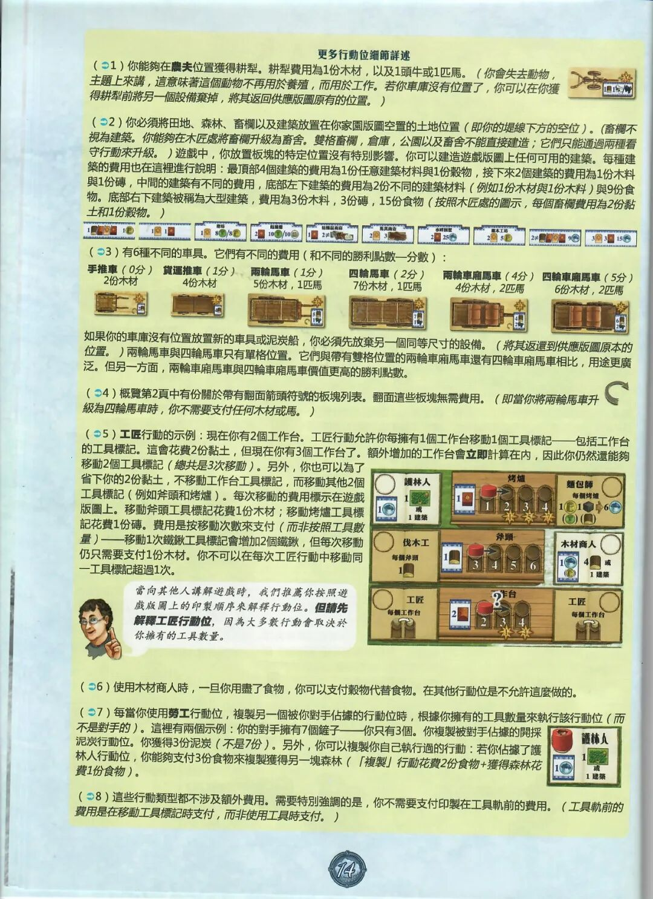
更多行動位細節詳述
(▶1) 你能夠在農夫位置獲得耕犁。耕犁費用為1份木材,以及1頭牛或1匹馬。 (你會失去動物,主題上來講,這意味著這個動物不再用於養殖,而用於工作。若你車庫沒有位置了,你可以在你獲得耕犁前將另一個設備棄掉,將其返回供應版圖原有的位置。 )
(▶2) 你必須將田地、森林、畜欄以及建築放置在你家園版圖空置的土地位置(即你的堤線下方的空位)。(畜欄不視為建築。你能夠在木匠處將畜欄升級為畜舍。雙格畜欄,倉庫,公園以及畜舍不能直接建造;它們只能通過兩種看守行動來升級。)遊戲中,你放置板塊的特定位置沒有特別影響。你可以建造遊戲版圖上任何可用的建築。每種建築的費用也在這裡進行說明:最頂部4個建築的費用為1份任意建築材料與1份穀物,接下來2個建築的費用為1份木料與1份磚,中間的建築有不同的費用,底部左下建築的費用為2份不同的建築材料(例如1份木材與1份木料)與9份食物。底部右下建築被稱為大型建築,費用為3份木料,3份磚,15份食物(按照木匠處的圖示,每個畜欄費用為2份黏土和1份穀物。)
圖:一列建築費用卡,部分卡片頂部印有名稱,自左至右可辨識為:〔?〕、〔?〕、麵坊、〔?〕〔?〕〔?〕、紡織品商店、器具商店、〔?〕別墅、〔?〕木工坊;其餘卡片無可辨識標籤。
(▶3) 有6種不同的車具。它們有不同的費用(和不同的勝利點數—分數):
手推車(0分) 2份木材 / 貨運推車(1分) 4份木材 / 兩輪馬車(1分) 5份木材,1匹馬 / 四輪馬車(2分) 7份木材,1匹馬 / 兩輪車廂馬車(4分) 4份木材,2匹馬 / 四輪車廂馬車(5分) 6份木材,2匹馬
圖:六種車具圖塊,右下角小數字標記依序為:2、4、5/1、7/1、4/2、6/2。
如果你的車庫沒有位置放置新的車具或泥炭船,你必須先放棄另一個同等尺寸的設備。(將其返還到供應版圖原本的位置。)兩輪馬車與四輪馬車只有單格位置。它們與帶有雙格位置的兩輪車廂馬車還有四輪車廂馬車相比,用途更廣泛。但另一方面,兩輪車廂馬車與四輪車廂馬車價值更高的勝利點數。
(▶4) 概覽第2頁中有份關於帶有翻面箭頭符號的板塊列表。翻面這些板塊無需費用。(即當你將兩輪馬車升級為四輪馬車時,你不需要支付任何木材或馬。)
(▶5) 工匠行動的示例:現在你有2個工作台。工匠行動允許你每擁有1個工作台移動1個工具標記——包括工作台的工具標記。這會花費2份黏土,但現在你有3個工作台了。額外增加的工作台會立即計算在內,因此你仍然還能夠移動2個工具標記(總共是3次移動)。另外,你也可以為了省下你的2份黏土,不移動工作台工具標記,而移動其他2個工具標記(例如斧頭和烤爐)。每次移動的費用標示在遊戲版圖上。移動斧頭工具標記花費1份木材;移動烤爐工具標記花費1份磚。費用是按移動次數來支付(而非按照工具數量)——移動1次鐵鍬工具標記會增加2個鐵鍬,但每次移動仍只需要支付1份木材。你不可以在每次工匠行動中移動同一工具標記超過1次。
圖:遊戲版圖局部(行動位與工具軌):護林人(1〔森林圖示〕或 1 建築;工具欄 1)、烤爐(費用卡 1〔磚圖示〕;工具軌 1、2、3、4,軌上放有工具標記與星形標記)、麵包師(每個烤爐:1〔錢幣圖示〕1〔深色圖示〕→ 6〔食物圖示〕,下方括號內另有兩個小圖示〔?〕)、伐木工(每個斧頭 1〔木材圖示〕)、斧頭(費用卡 1〔木材圖示〕;工具軌 3、4、5、6)、木材商人(工具欄 1〔?〕;4〔木材圖示〕或 1 建築)、工匠(每個工作台)、工作台(費用卡 2〔黏土圖示〕;工具軌 2、3、4,移動箭頭上方印有「?」)。
〔講解提示〕當向其他人講解遊戲時,我們推薦你按照遊戲版圖上的印製順序來解釋行動位。但請先解釋工匠行動位,因為大多數行動會取決於你擁有的工具數量。
(▶6) 使用木材商人時,一旦你用盡了食物,你可以支付穀物代替食物。在其他行動位是不允許這麼做的。
(▶7) 每當你使用勞工行動位,複製另一個被你對手佔據的行動位時,根據你擁有的工具數量來執行該行動位(而不是對手的)。這裡有兩個示例:你的對手擁有7個鏟子——你只有3個。你複製被對手佔據的開採泥炭行動位。你獲得3份泥炭(不是7份)。另外,你可以複製你自己執行過的行動:若你佔據了護林人行動位,你能夠支付3份食物來複製獲得另一塊森林(「複製」行動花費2份食物+獲得森林花費1份食物)。
(▶8) 這些行動類型都不涉及額外費用。需要特別強調的是,你不需要支付印製在工具軌前的費用。(工具軌前的費用是在移動工具標記時支付,而非使用工具時支付。)
〔14〕
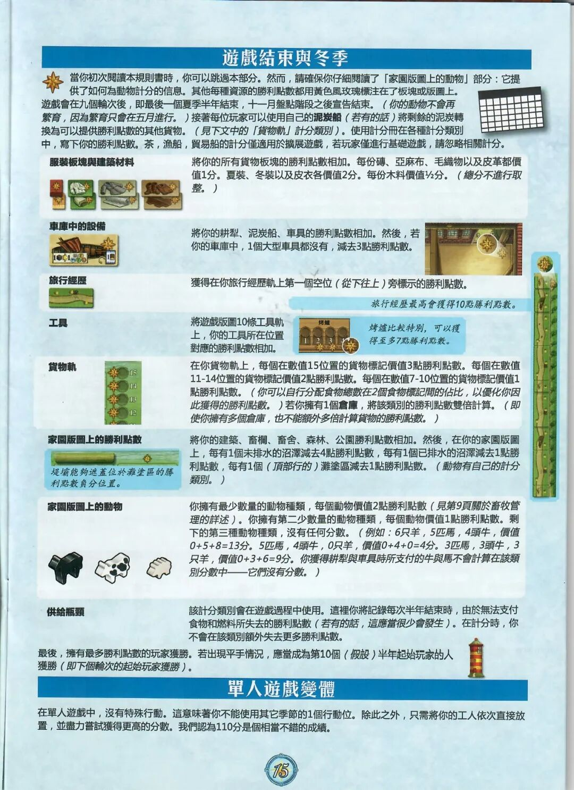
遊戲結束與冬季
當你初次閱讀本規則書時,你可以跳過本部分。然而,請確保你仔細閱讀了「家園版圖上的動物」部分:它提供了如何為動物計分的信息。其他每種資源的勝利點數都用黃色風玫瑰標注在了板塊或版圖上。遊戲會在九個輪次後,即最後一個夏季半年結束,十一月盤點階段之後宣告結束。(你的動物不會再繁育,因為繁育只會在五月進行。)接著每位玩家可以使用自己的泥炭船(若有的話)將剩餘的泥炭轉換為可以提供勝利點數的其他貨物。(見下文中的「貨物軌」計分類別)。使用計分冊在各種計分類別中,寫下你的勝利點數。茶,漁船,貿易船的計分僅適用於擴展遊戲,若玩家僅進行基礎遊戲,請忽略相關計分。
服裝板塊與建築材料
將你的所有貨物板塊的勝利點數相加。每份磚、亞麻布、毛織物以及皮革都價值1分。夏裝、冬裝以及皮衣各價值2分。每份木料價值½分。(總分不進行取整。)
車庫中的設備
將你的耕犁、泥炭船、車具的勝利點數相加。然後,若你的車庫中,1個大型車具都沒有,減去3點勝利點數。
旅行經歷
獲得在你旅行經歷軌上第一個空位(從下往上)旁標示的勝利點數。
旅行經歷最高會獲得10點勝利點數。
工具
將遊戲版圖10條工具軌上,你的工具所在位置的勝利點數相加。
烤爐比較特別,可以獲得至多7點勝利點數。
貨物軌
在你的貨物軌上,每個在數值15位置的貨物標記價值3點勝利點數。每個在數值11-14位置的貨物標記價值2點勝利點數。每個在數值7-10位置的貨物標記價值1點勝利點數。(你可以自行分配食物總數在2個食物標記間的佔比,以優化你因此獲得的勝利點數。)若你擁有1個倉庫,將該類別的勝利點數雙倍計算。(即使擁有多個倉庫,也不能額外多倍計算貨物的勝利點數。)
家園版圖上的勝利點數
將你的建築、畜欄、畜舍、森林、公園勝利點數相加。然後,在你的家園版圖上,每有1個未排水的沼澤減去4點勝利點數,每有1個已排水的沼澤減去1點勝利點數。每有1個(頂部行的)灘塗區減去1點勝利點數。(動物有自己的計分類別。)
家園版圖上的動物
你擁有最少數量的動物種類,每個動物價值2點勝利點數(見第9頁關於畜牧管理的詳述)。你擁有第二少數量的動物種類,每個動物價值1點勝利點數。剩下三種動物種類,沒有任何分數。(例如:6只羊,5匹馬,4頭牛,價值5+3=13分。5匹馬,4頭牛,0只羊,價值0+4+0=4分。3匹馬,3頭牛,3只羊,價值0+3+6=9分。你獲得耕犁與車具時所支付的牛與馬不會計算在該類別中——它們沒有分數。)
供給瓶頸
該類別會在遊戲過程中使用。這裡你將記錄每次半年結束時,由於無法支付供給所失去的勝利點數(若有的話,這應當很少會發生)。在計分時,你不會在該類別額外失去更多勝利點數。
最後,擁有最多勝利點數的玩家獲勝。若出現平手情況,應當成為第10個(假設)半年起始玩家的人獲勝(即下個輪次的起始玩家獲勝)。
單人遊戲變體
在單人遊戲中,沒有特殊行動。這意味著你不能使用其它季節的1個行動位。除此之外,只需將你的工人依次直接放置,並盡力嘗試獲得更高的分數。我們認為110分是個相當不錯的成績。
〔15〕
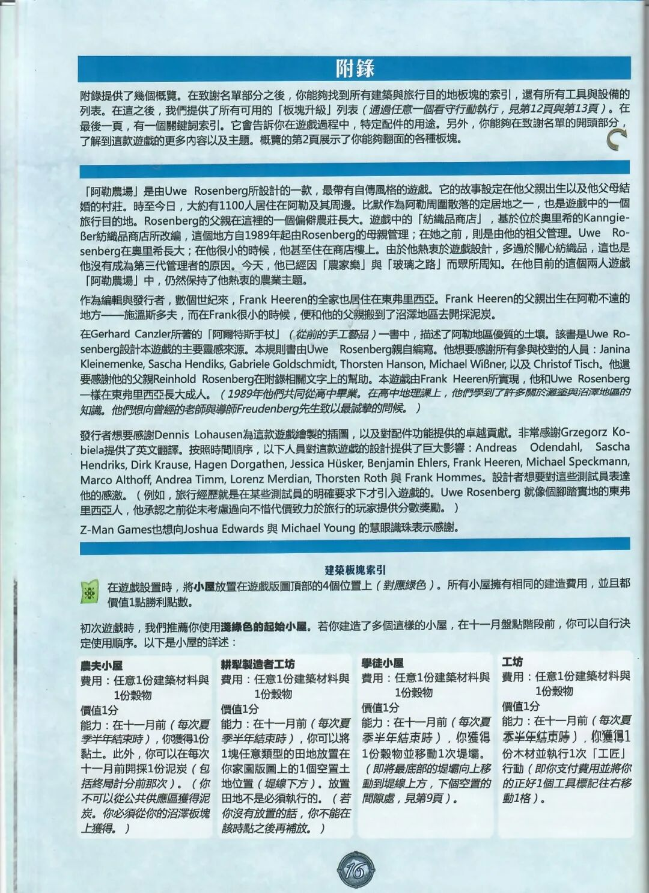
附錄
附錄提供了幾個概覽。在致謝名單部分之後,你能夠找到所有建築與旅行目的地板塊的索引,還有所有工具與設備的列表。在這之後,我們提供了所有可用的「板塊升級」列表(通過任意一個看守行動執行,見第12頁與第13頁)。在最後一頁,有一個關鍵詞索引。它會告訴你在遊戲過程中,特定配件的用途。另外,你能夠在致謝名單的開頭部分,了解到這款遊戲的更多內容以及主題。概覽的第2頁展示了你能夠翻面的各種板塊。
「阿勒農場」是由Uwe Rosenberg所設計的一款,最帶有自傳風格的遊戲。它的故事設定在他父親出生以及他父母結婚的村莊。時至今日,大約有1100人居住在阿勒及其周邊。比默作為阿勒周圍散落的定居地之一,也是遊戲中的一個旅行目的地。Rosenberg的父親在這裡的一個偏僻農莊長大。遊戲中的「紡織品商店」,基於位於奧里希的Kanngieber紡織品商店所改編,這個地方自1989年起由Rosenberg的母親管理;在她之前,則是由他的祖父管理。Uwe Rosenberg在奧里希長大;在他很小的時候,他甚至住在商店樓上。由於他熱衷於遊戲設計,多過於關心紡織品,這也是他沒有成為第三代管理者的原因。今天,他已經因「農家樂」與「玻璃之路」而眾所周知。在他目前的這個兩人遊戲「阿勒農場」中,仍然保持了他熱衷的農業主題。
作為編輯與發行者,數個世紀來,Frank Heeren的全家也居住在東弗里西亞。Frank Heeren的父親出生在阿勒不遠的地方——施溫斯多夫,而在Frank很小的時候,便和他的父親搬到了沼澤地區去開採泥炭。
在Gerhard Canzler所著的「阿爾特斯手杖」(從前的手工藝品)一書中,描述了阿勒地區優質的土壤。該書是Uwe Rosenberg設計本遊戲的主要靈感來源。本規則書由Uwe Rosenberg親自編寫。他想要感謝所有參與校對的人員:Janina Kleinemenke, Sascha Hendiks, Gabriele Goldschmidt, Thorsten Hanson, Michael Wißner, 以及 Christof Tisch。他還要感謝他的父親Reinhold Rosenberg在附錄相關文字上的幫助。本遊戲由Frank Heeren所實現,他和Uwe Rosenberg一樣在東弗里西亞長大成人。(1989年他們共同從高中畢業。在高中地理課上,他們學到了許多關於灘塗與沼澤地區的知識。他們想向曾經的老師與導師Freudenberg先生致以最誠摯的問候。)
發行者想要感謝Dennis Lohausen為這款遊戲繪製的插圖,以及對配件功能提供的卓越貢獻。非常感謝Grzegorz Kobiela提供了英文翻譯。按照時間順序,以下人員對這款遊戲的設計提供了巨大影響:Andreas Odendahl, Sascha Hendriks, Dirk Krause, Hagen Dorgathen, Jessica Hüsker, Benjamin Ehlers, Frank Heeren, Michael Speckmann, Marco Althoff, Andrea Timm, Lorenz Merdian, Thorsten Roth 與 Frank Hommes。設計者想要對這些測試員表達他的感激。(例如,旅行經歷就是在某些測試員的明確要求下才引入遊戲的。Uwe Rosenberg 就像個腳踏實地的東弗里西亞人,他承認之前從未考慮過向不惜代價致力於旅行的玩家提供分數獎勵。)
Z-Man Games也想向Joshua Edwards 與 Michael Young 的慧眼識珠表示感謝。
建築板塊索引
(小屋圖示)
在遊戲設置時,將小屋放置在遊戲版圖頂部的4個位置上(對應綠色)。所有小屋擁有相同的建造費用,並且都價值1點勝利點數。
初次遊戲時,我們推薦你使用淺綠色的起始小屋。若你建造了多個這樣的小屋,在十一月盤點階段前,你可以自行決定使用順序。以下是小屋的詳述:
農夫小屋
費用:任意1份建築材料與1份穀物
價值1分
能力:在十一月前(每次夏季半年結束時),你獲得1份黏土。此外,你可以在每次十一月前開採1份泥炭(包括終局計分前那次)。(你不可以從公共供應區獲得泥炭。你必須從你的沼澤板塊上獲得。)
耕犁製造者工坊
費用:任意1份建築材料與1份穀物
價值1分
能力:在十一月前(每次夏季半年結束時),你可以將1塊任意類型的田地放置在你家園版圖上的1個空置土地位置(堤線下方)。放置田地不是必須執行的。(若你沒有放置的話,你不能在該時點之後再補放。)
學徒小屋
費用:任意1份建築材料與1份穀物
價值1分
能力:在十一月前(每次夏季半年結束時),你獲得1份穀物並移動1次堤壩。(即將最底部的堤壩向上移動到堤線上方,下個空置的間隙處,見第9頁)。
工坊
費用:任意1份建築材料與1份穀物
價值1分
能力:在十一月前(每次夏季半年結束時),你獲得1份木材並執行1次「工匠」行動(即你支付費用並將你的正好1個工具標記往右移動1格)。
〔16〕
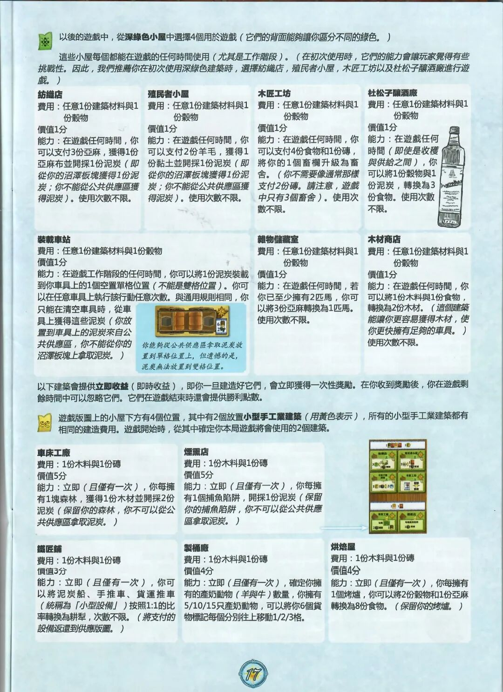
(小屋圖示) 以後的遊戲中,從深綠色小屋中選擇4個用於遊戲(它們的背面能夠讓你區分不同的綠色。)
這些小屋每個都能在遊戲的任何時間使用(尤其是工作階段)。(在初次使用時,它們的能力會讓玩家覺得有些挑戰性。因此,我們推薦你在初次使用深綠色建築時,選擇紡織店,殖民者小屋,木匠工坊以及杜松子釀酒廠進行遊戲。)
紡織店
費用:任意1份建築材料與1份穀物
價值1分
能力:在遊戲任何時間,你可以支付3份亞麻,獲得1份亞麻布並開採1份泥炭(即從你的沼澤板塊獲得1份泥炭;你不能從公共供應區獲得泥炭)。使用次數不限。
殖民者小屋
費用:任意1份建築材料與1份穀物
價值1分
能力:在遊戲任何時間,你可以支付2份羊毛,獲得1份黏土並開採1份泥炭(即從你的沼澤板塊獲得1份泥炭;你不能從公共供應區獲得泥炭)。使用次數不限。
木匠工坊
費用:任意1份建築材料與1份穀物
價值1分
能力:在遊戲任何時間,你可以支付4份食物和1份磚,將你的1個畜欄升級為畜舍。(你不需要像通常那樣支付2份磚。請注意,遊戲中只有3個畜舍)。使用次數不限。
杜松子釀酒廠
費用:任意1份建築材料與1份穀物
價值1分
能力:在遊戲任何時間(即使是收穫與供給之間),你可以將1份穀物與1份泥炭,轉換為3份食物。使用次數不限。
(插圖:酒瓶素描,瓶身標籤文字〔?……?〕)
裝載車站
費用:任意1份建築材料與1份穀物
價值1分
能力:在遊戲工作階段的任何時間,你可以將1份泥炭裝載到你車具上的1個空置單格位置(不能是雙格位置)。你可以在任意車具上執行該行動任意次數。與通用規則相同,你只能在清空車具時,從車具上獲得這些泥炭(你放置到車具上的泥炭來自公共供應區,你不能從你的沼澤板塊上拿取泥炭。)
(插圖:裝載泥炭的車具)
你能夠從公共供應區拿取泥炭放置到單格位置上,但遺憾的是,泥炭無法放置到雙格位置。
雜物儲藏室
費用:任意1份建築材料與1份穀物
價值1分
能力:在遊戲任何時間,若你已至少擁有2匹馬,你可以將3份亞麻轉換為1匹馬。使用次數不限。
木材商店
費用:任意1份建築材料與1份穀物
價值1分
能力:在遊戲任何時間,你可以將1份木料與1份食物,轉換為2份木材。(這個建築能讓你更容易獲得木材,使你更快擁有足夠的車具。)使用次數不限。
以下建築會提供立即收益(即時收益),即你一旦建造好它們,會立即獲得一次性獎勵。在你收到獎勵後,你在遊戲剩餘時間中可以忽略它們。它們在遊戲結束時還會提供勝利點數。
(遊戲版圖圖示) 遊戲版圖上的小屋下方有4個位置,其中有2個放置小型手工業建築(用黃色表示),所有的小型手工業建築都有相同的建造費用。遊戲開始時,從其中確定你本局遊戲將會使用的2個建築。
車床工廠
費用:1份木料與1份磚
價值5分
能力:立即(且僅有一次),你每擁有1塊森林,獲得1份木材並開採2份泥炭(保留你的森林,你不可以從公共供應區拿取泥炭。)
煙熏店
費用:1份木料與1份磚
價值5分
能力:立即(且僅有一次),你每擁有1個捕魚陷阱,開採1份泥炭(保留你的捕魚陷阱,你不可以從公共供應區拿取泥炭。)
(插圖:遊戲版圖上建築展示區的照片,圖中板塊文字過小〔?……?〕)
鐵匠鋪
費用:1份木料與1份磚
價值3分
能力:立即(且僅有一次),你可以將泥炭船、手推車、貨運推車(統稱為「小型設備」)按照1:1的比率轉換為耕犁,次數不限。(將支付的設備返還到供應版圖。)
製桶廠
費用:1份木料與1份磚
價值4分
能力:立即(且僅有一次),確定你擁有的產奶動物(羊與牛)數量,你擁有5/10/15隻產奶動物,可以將你6個貨物標記每個分別往上移動1/2/3格。
烘焙屋
費用:1份木料與1份磚
價值4分
能力:立即(且僅有一次),你每擁有1個烤爐,你可以將2份穀物和1份亞麻轉換為8份食物。(保留你的烤爐。)
〔17〕
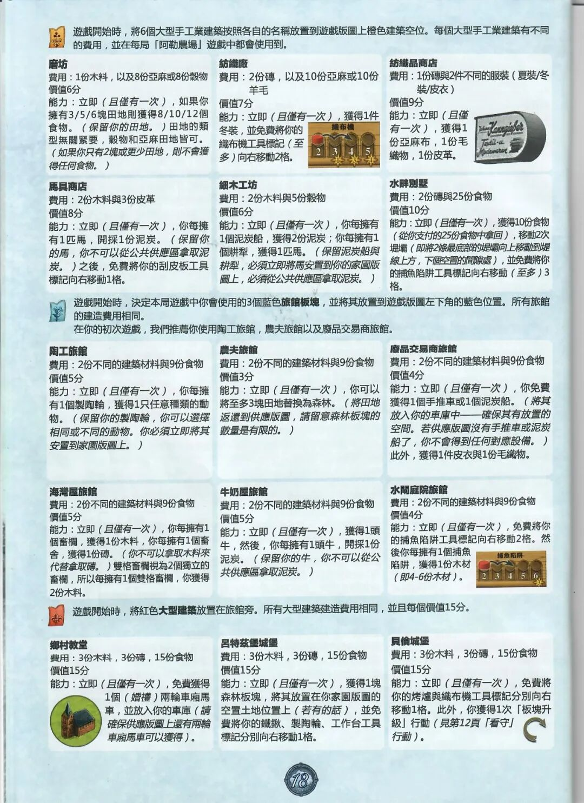
遊戲開始時，將6個大型手工業建築按照各自的名稱放置到遊戲版圖上橙色建築空位。每個大型手工業建築有不同的費用，並在每局「阿勒農場」遊戲中都會使用到。
磨坊
費用：1份木料，以及8份亞麻或8份穀物
價值6分
能力：立即（且僅有一次），如果你擁有3/5/6塊田地則獲得8/10/12個食物。（保留你的田地。）田地的類型無關緊要，穀物和亞麻田地皆可。（如果你只有2塊或更少田地，則不會獲得任何食物。）
紡織廠
費用：2份磚，以及10份亞麻或10份羊毛
價值7分
能力：立即（且僅有一次），獲得1件冬裝，並免費將你的織布機工具標記（至多）向右移動2格。
織布機
2 3 4 5
紡織品商店
費用：1份磚與2件不同的服裝（夏裝／冬裝／皮衣）
價值9分
能力：立即（且僅有一次），獲得1份亞麻布，1份毛織物，1份皮革。
〔?……?〕Textil- u. Manufakturwaren
馬具商店
費用：2份木料與3份皮革
價值8分
能力：立即（且僅有一次），你每擁有1匹馬，開採1份泥炭。（保留你的馬，你不可以從公共供應區拿取泥炭。）之後，免費將你的刮皮板工具標記向右移動1格。
細木工坊
費用：2份木料與5份穀物
價值6分
能力：立即（且僅有一次），你每擁有1個泥炭船，獲得2份泥炭；你每擁有1個耕犁，獲得1匹馬。（保留泥炭船與耕犁，必須立即將馬安置到你的家園版圖上，必須從公共供應區拿取泥炭。）
水畔別墅
費用：2份磚與25份食物
價值10分
能力：立即（且僅有一次），獲得10份食物（從你支付的25份食物中拿回），移動2次堤壩（即將2條最底部的堤壩向上移動到堤線上方，下個空置的間隙處），並免費將你的捕魚陷阱工具標記向右移動（至多）3格。
遊戲開始時，決定本局遊戲中你會使用的3個藍色旅館板塊，並將其放置到遊戲版圖左下角的藍色位置。所有旅館的建造費用相同。
在你的初次遊戲，我們推薦你使用陶工旅館，農夫旅館以及廢品交易商旅館。
陶工旅館
費用：2份不同的建築材料與9份食物
價值5分
能力：立即（且僅有一次），你每擁有1個製陶輪，獲得1只任意種類的動物。（保留你的製陶輪，你可以選擇相同或不同的動物。你必須立即將其安置到家園版圖上。）
農夫旅館
費用：2份不同的建築材料與9份食物
價值3分
能力：立即（且僅有一次），你可以將至多3塊田地替換為森林。（將田地返還到供應版圖，請留意森林板塊的數量是有限的。）
廢品交易商旅館
費用：2份不同的建築材料與9份食物
價值4分
能力：立即（且僅有一次），你免費獲得1個手推車或1個泥炭船。（將其放入你的車庫中——確保其有放置的空間。若供應版圖沒有手推車或泥炭船了，你不會得到任何對應設備。）此外，獲得1件皮衣與1份毛織物。
海灣屋旅館
費用：2份不同的建築材料與9份食物
價值5分
能力：立即（且僅有一次），你每擁有1個畜欄，獲得1份木料，你每擁有1個畜舍，獲得1份磚。（你不可以拿取木料來代替拿取磚。）雙格畜欄視為2個獨立的畜欄，所以每擁有1個雙格畜欄，你獲得2份木料。
牛奶屋旅館
費用：2份不同的建築材料與9份食物
價值5分
能力：立即（且僅有一次），獲得1頭牛，然後，你每擁有1頭牛，開採1份泥炭。（保留你的牛，你不可以從公共供應區拿取泥炭。）
水閘庭院旅館
費用：2份不同的建築材料與9份食物
價值4分
能力：立即（且僅有一次），免費將你的捕魚陷阱工具標記向右移動2格。然後你每擁有1個捕魚陷阱，獲得1份木材（即4-6份木材）。
捕魚陷阱
2 3 4 5 6
遊戲開始時，將紅色大型建築放置在旅館旁。所有大型建築建造費用相同，並且每個價值15分。
鄉村教堂
費用：3份木料，3份磚，15份食物
價值15分
能力：立即（且僅有一次），免費獲得1個（婚禮）兩輪車廂馬車，並放入你的車庫（請確保供應版圖上還有兩輪車廂馬車可以獲得）。
呂特茲堡城堡
費用：3份木料，3份磚，15份食物
價值15分
能力：立即（且僅有一次），獲得1塊森林板塊，將其放置在你家園版圖的空置土地位置上（若有的話），並免費將你的鐵鍬、製陶輪、工作台工具標記分別向右移動1格。
貝倫城堡
費用：3份木料，3份磚，15份食物
價值15分
能力：立即（且僅有一次），免費將你的烤爐與織布機工具標記分別向右移動1格。此外，你獲得1次「板塊升級」行動（見第12頁「看守」行動）。
〔18〕
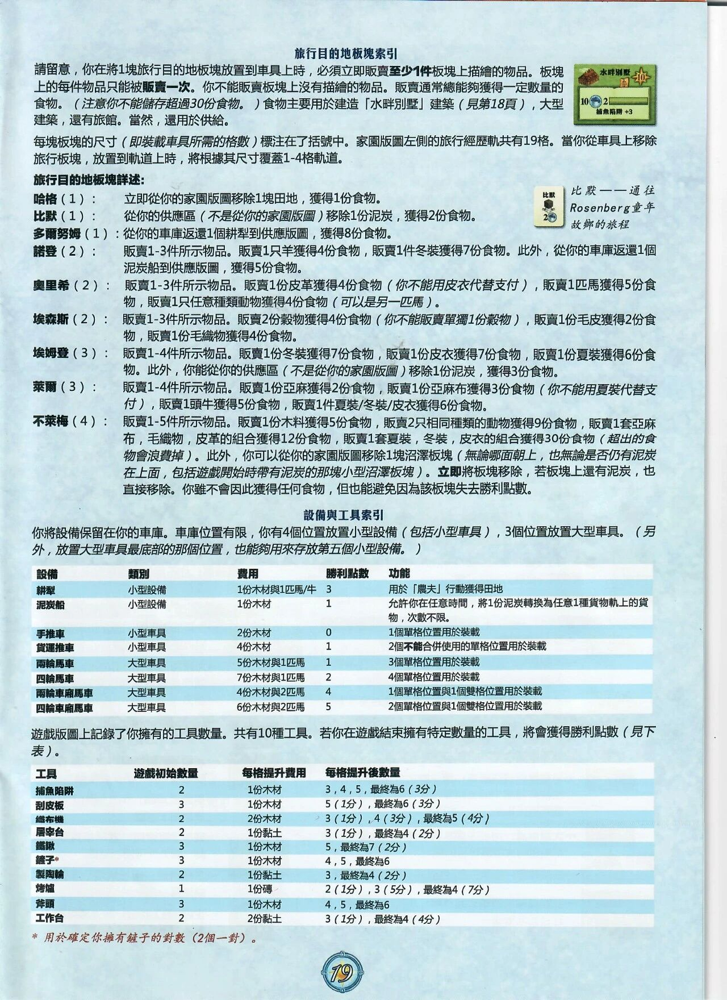
旅行目的地板塊索引
請留意，你在將1塊旅行目的地板塊放置到車具上時，必須立即販賣至少1件板塊上描繪的物品。板塊上的每件物品只能被販賣一次。你不能販賣板塊上沒有描繪的物品。販賣通常總能夠獲得一定數量的食物。（注意你不能儲存超過30份食物。）食物主要用於建造「水畔別墅」建築（見第18頁），大型建築，還有旅館。當然，還用於供給。
水畔別墅 10
10 2
捕魚陷阱 +3
每塊板塊的尺寸（即裝載車具所需的格數）標注在了括號中。家園版圖左側的旅行經歷軌共有19格。當你從車具上移除旅行板塊，放置到軌道上時，將根據其尺寸覆蓋1-4格軌道。
比歇
2
旅行目的地板塊詳述：
哈格（1）：立即從你的家園版圖移除1塊田地，獲得1份食物。
比歇（1）：從你的供應區（不是從你的家園版圖）移除1份泥炭，獲得2份食物。
比歇——通往Rosenberg童年故鄉的旅程
多爾努姆（1）：從你的車庫返還1個耕犁到供應版圖，獲得8份食物。
諾登（2）：販賣1-3件所示物品。販賣1只羊獲得4份食物，販賣1件冬裝獲得7份食物。此外，從你的車庫返還1個泥炭船到供應版圖，獲得5份食物。
奧里希（2）：販賣1-3件所示物品。販賣1份皮革獲得4份食物（你不能用皮衣代替支付），販賣1匹馬獲得5份食物，販賣1只任意種類動物獲得4份食物（可以是另一匹馬）。
埃森斯（2）：販賣1-3件所示物品。販賣2份穀物獲得4份食物（你不能販賣單獨1份穀物），販賣1份毛皮獲得2份食物，販賣1份毛織物獲得4份食物。
埃姆登（3）：販賣1-4件所示物品。販賣1份冬裝獲得7份食物，販賣1份皮衣獲得7份食物，販賣1份夏裝獲得6份食物。此外，你能從你的供應區（不是從你的家園版圖）移除1份泥炭，獲得3份食物。
萊爾（3）：販賣1-4件所示物品。販賣1份亞麻獲得2份食物，販賣1份亞麻布獲得3份食物（你不能用夏裝代替支付），販賣1頭牛獲得5份食物，販賣1件夏裝／冬裝／皮衣獲得6份食物。
不萊梅（4）：販賣1-5件所示物品。販賣1份木料獲得5份食物，販賣2只相同種類的動物獲得9份食物，販賣1套亞麻布，毛織物，皮革的組合獲得12份食物，販賣1套夏裝，冬裝，皮衣的組合獲得30份食物（超出的食物會浪費掉）。此外，你可以從你的家園版圖移除1塊沼澤板塊（無論哪面朝上，也無論是否仍有泥炭在上面，包括遊戲開始時帶有泥炭的那塊小型沼澤板塊）。立即將板塊移除，若板塊上還有泥炭，也直接移除。你雖不會因此獲得任何食物，但也能避免因為該板塊失去勝利點數。
設備與工具索引
你將設備保留在你的車庫。車庫位置有限，你有4個位置放置小型設備（包括小型車具），3個位置放置大型車具。（另外，放置大型車具最底部的那個位置，也能夠用來存放第五個小型設備。）
| 設備 | 類別 | 費用 | 勝利點數 | 功能 |
| 耕犁 | 小型設備 | 1份木材與1匹馬/牛 | 3 | 用於「農夫」行動獲得田地 |
| 泥炭船 | 小型設備 | 1份木材 | 1 | 允許你在任意時間，將1份泥炭轉換為任意1種貨物軌上的貨物，次數不限。 |
| 手推車 | 小型車具 | 2份木材 | 0 | 1個單格位置用於裝載 |
| 貨運推車 | 小型車具 | 4份木材 | 1 | 2個不能合併使用的單格位置用於裝載 |
| 兩輪馬車 | 大型車具 | 5份木材與1匹馬 | 1 | 3個單格位置用於裝載 |
| 四輪馬車 | 大型車具 | 7份木材與1匹馬 | 2 | 4個單格位置用於裝載 |
| 兩輪車廂馬車 | 大型車具 | 4份木材與2匹馬 | 4 | 1個單格位置與1個雙格位置用於裝載 |
| 四輪車廂馬車 | 大型車具 | 6份木材與2匹馬 | 5 | 2個單格位置與1個雙格位置用於裝載 |
遊戲版圖上記錄了你擁有的工具數量。共有10種工具。若你在遊戲結束擁有特定數量的工具，將會獲得勝利點數（見下表）。
| 工具 | 遊戲初始數量 | 每格提升費用 | 每格提升後數量 |
| 捕魚陷阱 | 2 | 1份木材 | 3，4，5，最終為6（3分） |
| 刮皮板 | 3 | 1份木材 | 5（1分），最終為6（3分） |
| 織布機 | 2 | 2份木材 | 3（1分），4（3分），最終為5（4分） |
| 屠宰台 | 2 | 1份黏土 | 3（1分），最終為4（2分） |
| 鐵鍬 | 3 | 1份木材 | 5，最終為7（2分） |
| 鏟子* | 3 | 1份木材 | 4，5，最終為6 |
| 製陶輪 | 2 | 1份黏土 | 3，最終為4（2分） |
| 烤爐 | 1 | 1份磚 | 2（1分），3（5分），最終為4（7分） |
| 斧頭 | 3 | 1份木材 | 4，5，最終為6 |
| 工作台 | 2 | 2份黏土 | 3（1分），最終為4（4分） |
\* 用於確定你擁有鏟子的對數（2個一對）。
〔19〕
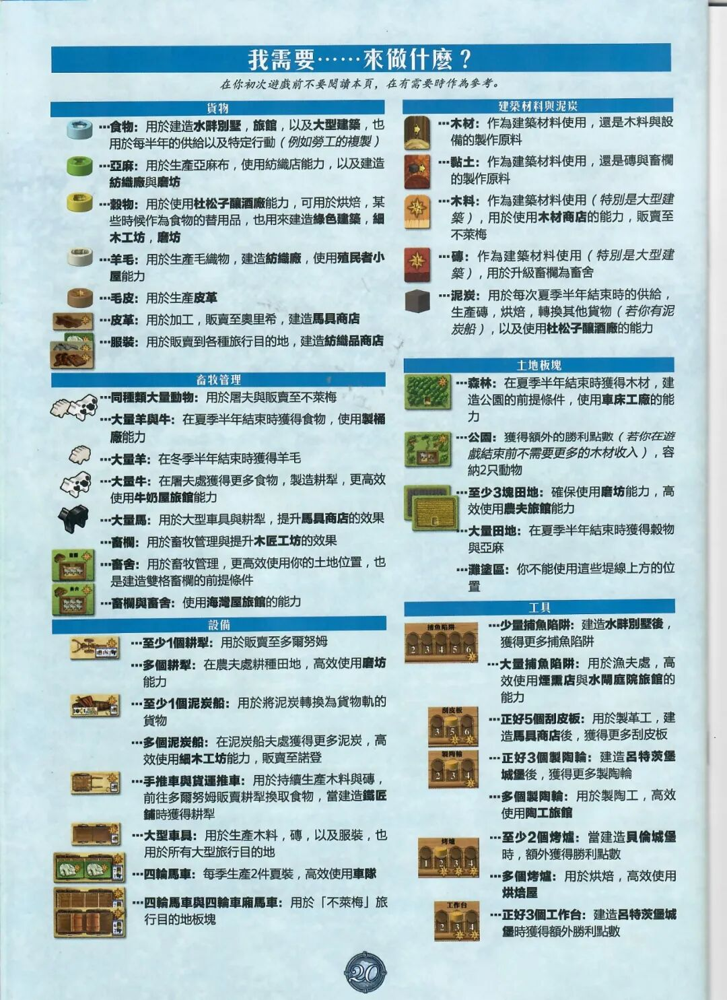
我需要……來做什麼?
在你初次遊戲前不要閱讀本頁,在有需要時作為參考。
貨物
…食物: 用於建造水畔別墅,旅館,以及大型建築,也用於每半年的供給以及特定行動(例如勞工的複製)
…亞麻: 用於生產亞麻布,使用紡織店能力,以及建造紡織廠與磨坊
…穀物: 用於使用杜松子釀酒廠能力,可用於烘焙,某些時候作為食物的替用品,也用來建造綠色建築,細木工坊,磨坊
…羊毛: 用於生產毛織物,建造紡織廠,使用殖民者小屋能力
…毛皮: 用於生產皮革
…皮革: 用於加工,販賣至奧里希,建造馬具商店
…服裝: 用於販賣到各種旅行目的地,建造紡織品商店
畜牧管理
…同種類大量動物: 用於屠夫與販賣至不萊梅
…大量羊與牛: 在夏季半年結束時獲得食物,使用製桶廠能力
…大量羊: 在冬季半年結束時獲得羊毛
…大量牛: 在屠夫處獲得更多食物,製造耕犁,更高效使用牛奶屋旅館能力
…大量馬: 用於大型車具與耕犁,提升馬具商店的效果
…畜欄: 用於畜牧管理與提升木匠工坊的效果
…畜舍: 用於畜牧管理,更高效使用你的土地位置,也是建造雙格畜欄的前提條件
…畜欄與畜舍: 使用海灣屋旅館的能力
設備
…至少1個耕犁: 用於販賣至多爾努姆
…多個耕犁: 在農夫處耕種田地,高效使用磨坊能力
…至少1個泥炭船: 用於將泥炭轉換為貨物軌的貨物
…多個泥炭船: 在泥炭船夫處獲得更多泥炭,高效使用細木工坊能力,販賣至諾登
…手推車與貨運推車: 用於持續生產木料與磚,前往多爾努姆販賣耕犁換取食物,當建造鐵匠鋪時獲得耕犁
…大型車具: 用於生產木料,磚,以及服裝,也用於所有大型旅行目的地
…四輪馬車: 每季生產2件夏裝,高效使用車隊
…四輪馬車與四輪車廂馬車: 用於「不萊梅」旅行目的地板塊
建築材料與泥炭
…木材: 作為建築材料使用,還是木料與設備的製作原料
…黏土: 作為建築材料使用,還是磚與畜欄的製作原料
…木料: 作為建築材料使用(特別是大型建築),用於使用木材商店的能力,販賣至不萊梅
…磚: 作為建築材料使用(特別是大型建築),用於升級畜欄為畜舍
…泥炭: 用於每次夏季半年結束時的供給,生產磚,烘焙,轉換其他貨物(若你有泥炭船),以及使用杜松子釀酒廠的能力
土地板塊
…森林: 在夏季半年結束時獲得木材,建造公園的前提條件,使用車床工廠的能力
…公園: 獲得額外的勝利點數(若你在遊戲結束前不需要更多的木材收入),容納2隻動物
…至少3塊田地: 確保使用磨坊能力,高效使用農夫旅館能力
…大量田地: 在夏季半年結束時獲得穀物與亞麻
…溝塗區: 你不能使用這些堤線上方的位置
工具
捕魚陷阱
…少量捕魚陷阱: 建造水畔別墅後,獲得更多捕魚陷阱
…大量捕魚陷阱: 用於漁夫處,高效使用煙熏店與水閘庭院旅館的能力
刮皮板
…正好5個刮皮板: 用於製革工,建造馬具商店後,獲得更多刮皮板
製陶輪
…正好3個製陶輪: 建造呂特茨堡城堡後,獲得更多製陶輪
…多個製陶輪: 用於製陶工,高效使用陶工旅館
烤爐
…至少2個烤爐: 當建造貝倫城堡時,額外獲得勝利點數
…多個烤爐: 用於烘焙,高效使用烘焙屋
工作台
…正好3個工作台: 建造呂特茨堡城堡時獲得額外勝利點數
〔20〕
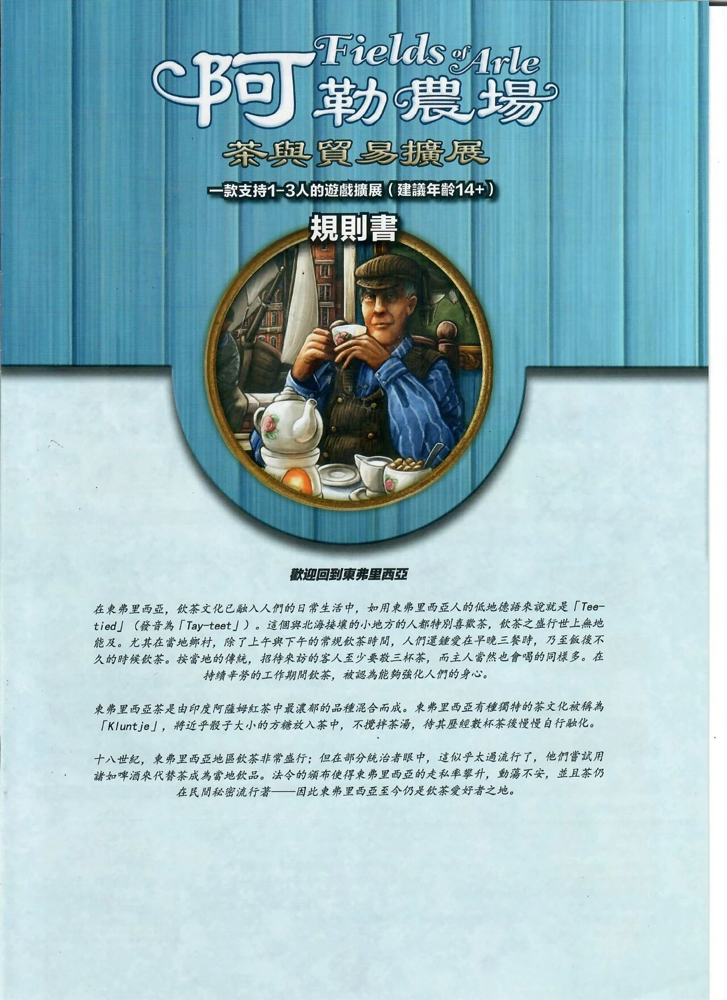
Fields of Arle 阿勒農場
茶與貿易擴展
一款支持1-3人的遊戲擴展(建議年齡14+)
規則書
(圓形插圖:一名男子坐在桌前端杯飲茶)
歡迎回到東弗里西亞
在東弗里西亞,飲茶文化已融入人們的日常生活中,如用東弗里西亞人的低地德語來說就是「Tee-tied」(發音為「Tay-teet」)。這個與北海接壤的小地方的人都特別喜歡茶,飲茶之盛行世上無地能及。尤其在當地鄉村,除了上午與下午的常規飲茶時間,人們還鍾愛在早晚三餐時,乃至飯後不久的時候飲茶。按當地的傳統,招待來訪的客人至少要敬三杯茶,而主人當然也會喝的同樣多。在持續辛勞的工作期間飲茶,被認為能夠強化人們的身心。
東弗里西亞茶是由印度阿薩姆紅茶中最濃郁的品種混合而成。東弗里西亞有種獨特的茶文化被稱為「Kluntje」,將近乎骰子大小的方糖放入茶中,不攪拌茶湯,待其歷經數杯茶後慢慢自行融化。
十八世紀,東弗里西亞地區飲茶非常盛行;但在部分統治者眼中,這似乎太過流行了,他們嘗試用諸如啤酒來代替茶成為當地飲品。法令的頒布使得東弗里西亞的走私率攀升,動蕩不安,並且茶仍在民間秘密流行著——因此東弗里西亞至今仍是飲茶愛好者之地。
〔无〕
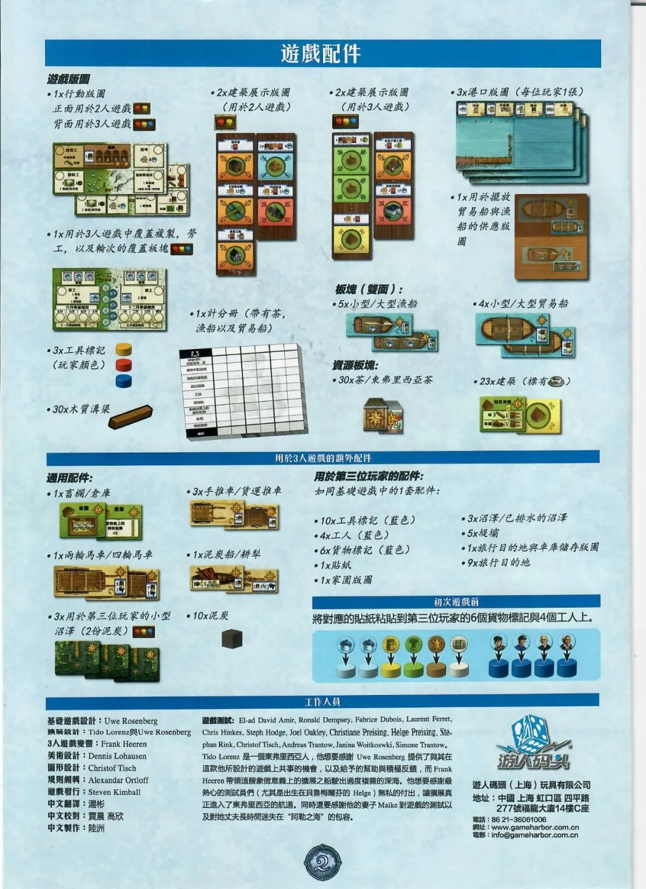
遊戲配件
遊戲版圖
- 1x行動版圖
正面用於2人遊戲〔圖示〕
背面用於3人遊戲〔圖示〕
〔行動版圖正反面圖〕
- 1x用於3人遊戲中覆蓋複製，勞工，以及輪次的覆蓋板塊〔圖示〕
- 2x建築展示版圖
（用於2人遊戲）〔圖示〕
- 2x建築展示版圖
（用於3人遊戲）〔圖示〕
- 3x港口版圖（每位玩家1張）
〔港口版圖圖〕
- 1x用於擺放貿易船與漁船的供應版圖
〔供應版圖圖〕
- 3x工具標記
（玩家顏色）
- 1x計分冊（帶有茶，漁船以及貿易船）
〔計分冊圖〕
板塊（雙面）：
- 5x小型/大型漁船
- 4x小型/大型貿易船
資源板塊：
- 30x茶/東弗里西亞茶
- 23x建築（標有〔圖示〕）
〔板塊與資源板塊圖〕
- 30x木質溝渠
用於3人遊戲的額外配件
通用配件：
- 1x畜欄/倉庫
〔畜欄/倉庫圖〕
- 1x兩輪馬車/四輪馬車
〔兩輪馬車/四輪馬車圖〕
- 3x用於第三位玩家的小型沼澤（2份泥炭）〔圖示〕
〔小型沼澤板塊圖〕
- 3x手推車/貨運推車
〔手推車/貨運推車圖〕
- 1x泥炭船/耕犁
〔泥炭船/耕犁圖〕
- 10x泥炭
用於第三位玩家的配件：
如同基礎遊戲中的1套配件：
- 10x工具標記（藍色）
- 4x工人（藍色）
- 6x貨物標記（藍色）
- 1x貼紙
- 1x家園版圖
- 3x沼澤/已排水的沼澤
- 5x堤壩
- 1x旅行目的地與車庫儲存版圖
- 9x旅行目的地
初次遊戲前
將對應的貼紙粘貼到第三位玩家的6個貨物標記與4個工人上。
〔貼紙與配件對應圖〕
工作人員
基礎遊戲設計： Uwe Rosenberg
擴展設計： Tido Lorenz與Uwe Rosenberg
3人遊戲變體： Frank Heeren
美術設計： Dennis Lohausen
圖形設計： Christof Tisch
規則編輯： Alexander Ortloff
遊戲發行： Steven Kimball
中文翻譯： 湯彬
中文校對： 賈晨 高欣
中文製作： 陸洲
遊戲測試： El-ad David Amir, Ronald Dempsey, Fabrice Dubois, Laurent Ferret, Chris Hinkes, Steph Hodge, Joel Oakley, Christiane Praising, Helge Praising, Ste-phan Rink, Christof Tisch, Andreas Trantow, Janina Woitkoswki, Simone Trantow。
Tido Lorenz 是一個東弗里西亞人，他想要感謝 Uwe Rosenberg 提供了與其在這款他所設計的遊戲上共事的機會，以及給予的幫助與積極反饋，而 Frank Heeren 帶領這艘象徵意義上的擴展之船駛出過度複雜的深海。他想要感謝最熱心的測試員們（尤其是出生在貝魯梅爾芬的 Helge）無私的付出，讓擴展真正進入了東弗里西亞的航道。同時還要感謝他的妻子 Maike 對遊戲的測試以及對她丈夫長時間迷失在“阿勒之海”的包容。
遊人碼頭（上海）玩具有限公司
地址：中國 上海 虹口區 四平路
277號福龍大廈14樓C座
電話：86 21-36061006
網址：www.gameharbor.com.cn
電郵：info@gameharbor.com.cn
[印刷頁碼:2]
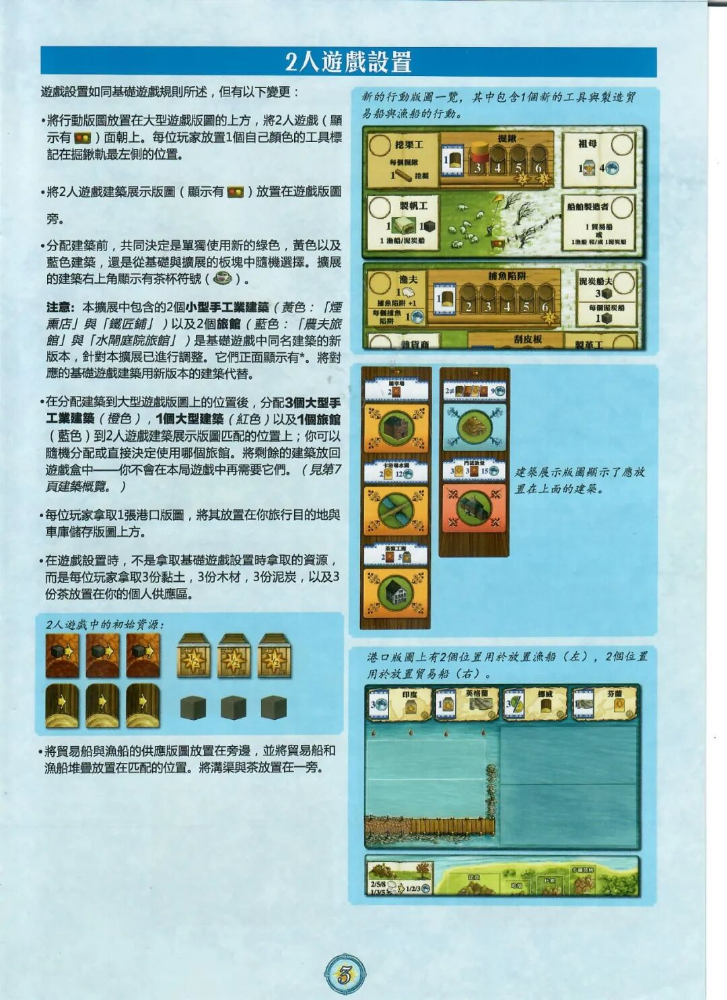
2人遊戲設置
遊戲設置如同基礎遊戲規則所述，但有以下變更：
- 將行動版圖放置在大型遊戲版圖的上方，將2人遊戲（顯示有〔圖示〕）面朝上。每位玩家放置1個自己顏色的工具標記在掘鍬軌最左側的位置。
新的行動版圖一覽，其中包含1個新的工具與製造貿易船與漁船的行動。
〔行動版圖圖〕
- 將2人遊戲建築展示版圖（顯示有〔圖示〕）放置在遊戲版圖旁。
- 分配建築前，共同決定是單獨使用新的綠色，黃色以及藍色建築，還是從基礎與擴展的板塊中隨機選擇。擴展的建築右上角顯示有茶杯符號（〔圖示〕）。
注意： 本擴展中包含的2個小型手工業建築（黃色：「煙熏店」與「鐵匠鋪」）以及2個旅館（藍色：「農夫旅館」與「水鬧庭院旅館」）是基礎遊戲中同名建築的新版本，針對本擴展已進行調整。它們正面顯示有*。將對應的基礎遊戲建築用新版本的建築代替。
- 在分配建築到大型遊戲版圖上的位置後，分配3個大型手工業建築（橙色），1個大型建築（紅色）以及1個旅館（藍色）到2人遊戲建築展示版圖匹配的位置上；你可以隨機分配或直接決定使用哪個旅館。將剩餘的建築放回遊戲盒中——你不會在本局遊戲中再需要它們。（見第7頁建築概覽。）
建築展示版圖顯示了應放置在上面的建築。
〔建築展示版圖圖〕
- 每位玩家拿取1張港口版圖，將其放置在你旅行目的地與車庫儲存版圖上方。
港口版圖上有2個位置用於放置漁船（左），2個位置用於放置貿易船（右）。
- 在遊戲設置時，不是拿取基礎遊戲設置時拿取的資源，而是每位玩家拿取3份黏土，3份木材，3份泥炭，以及3份茶放置在你的個人供應區。
2人遊戲中的初始資源：
〔初始資源圖〕
- 將貿易船與漁船的供應版圖放置在旁邊，並將貿易船和漁船堆疊放置在匹配的位置。將溝渠與茶放置在一旁。
〔港口版圖與旅行目的地版圖圖〕
[印刷頁碼:3]
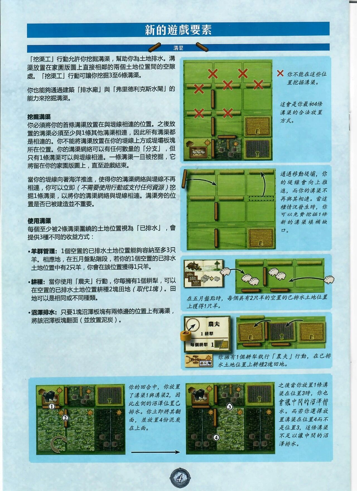
新的遊戲要素
溝渠
「挖渠工」行動允許你挖掘溝渠,幫助你為土地排水。溝渠放置在家園版圖上直接相鄰的兩個土地位置間的空隙處。「挖渠工」行動可讓你挖掘3至6條溝渠。
你也能夠通過建築「排水廠」與「弗里德里克斯水閘」的能力來挖掘溝渠。
挖掘溝渠
你必須將你的首條溝渠放置在與堤線相連的位置。之後放置的溝渠必須至少與1條其他溝渠相連,因此所有溝渠都是相連的。你不能將溝渠放置在你的堤線上方或堤壩板塊所在位置。你的溝渠網絡可以有任意數量的「分支」,但只有1條溝渠可以與堤線相連。一條溝渠一旦被挖掘,它將留在你的家園版圖上,直至遊戲結束。
✗ 你不能在這些位置挖掘溝渠。
這會是你最初4條溝渠的合法放置方式。
當你的堤線向著海洋推進,使得你的溝渠網絡與堤線不再相連,你可以立即(不需要使用行動或支付任何資源)挖掘1條溝渠,以將你的溝渠網絡與堤線相連。溝渠旁的位置是否已被建造並不重要。
通過移動堤壩,你的堤線會向上推進,而你的溝渠不再與其相連。當這種情況發生時,你可以免費挖掘1條新的溝渠填補缺口。
使用溝渠
每個至少被2條溝渠圍繞的土地位置視為「已排水」,會提供3種不同的收益方式:
- 羊群管理: 1個空置的已排水土地位置能夠容納至多3只羊。相應地,在五月盤點階段,若你的1個空置的已排水土地位置中有2只羊,你會在該位置獲得1只羊。
在五月盤點時,每個具有2只羊的空置的已排水土地位置上獲得1只羊。
- 耕種: 當你使用「農夫」行動,你每擁有1個耕犁,可以在空置的已排水土地位置耕種2塊田地(取代1塊)。田地可以是相同或不同種類。
農夫|1 耕犁|每個耕犁 1〔田地圖示/田地圖示〕
〔耕犁配件圖示上的標注小字無法辨識:1〔?〕1〔?〕〕
你擁有1個耕犁執行「農夫」行動,在已排水土地位置上耕種2塊田地。
- 沼澤排水: 只要1塊沼澤板塊有兩條邊的位置上有溝渠,將該沼澤板塊翻面(並放置泥炭)。
① ②
你的回合中,你放置了溝渠1與溝渠2,因此左側的沼澤位置已排水。你立即將其翻面,並放置4份泥炭在上面。
③ ④
之後當你放置1條溝渠在位置3時,你也會讓中間的沼澤排水。而若你選擇放置溝渠在位置4而不是位置3,這條溝渠不足以讓中間的沼澤排水。
〔4〕
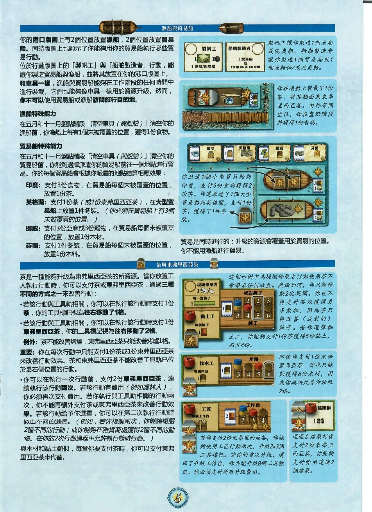
漁船與貿易船
你的港口版圖上有2個位置放置漁船,2個位置放置貿易船。同時版圖上也顯示了你能夠用你的貿易船執行哪些貿易行動。
位於行動版圖上的「製帆工」與「船舶製造者」行動,能讓你製造貿易船與漁船,並將其放置在你的港口版圖上。
和車具一樣,漁船與貿易船能夠在工作階段的任何時間中進行裝載。它們也能夠像車具一樣用於資源升級。然而,你不可以使用貿易船或漁船訪問旅行目的地。
漁船特殊能力
在五月和十一月盤點階段「清空車具(與船舶)」清空你的漁船前,你漁船上每有1個未被覆蓋的位置,獲得1份食物。
貿易船特殊能力
在五月和十一月盤點階段「清空車具(與船舶)」清空你的貿易船前,你能夠選擇派遣你的貿易船前往一個地點進行貿易。你的每個貿易船會根據你派遣的地點結算相應效果:
- 印度: 支付3份食物,在貿易船每個未被覆蓋的位置,放置1份茶。
- 英格蘭: 支付1份茶(或1份東弗里西亞茶),在大型貿易船上放置1件冬裝。(你必須在貿易船上有3個未被覆蓋的位置。)
- 挪威: 支付3份亞麻或3份穀物,在貿易船每個未被覆蓋的位置,放置1份木材。
- 芬蘭: 支付1件冬裝,在貿易船每個未被覆蓋的位置,放置1份木料。
製帆工|1〔圖示〕1〔圖示〕|1 漁船/泥炭船
船舶製造者|1 貿易船|或|1漁船 和/或 1泥炭船
製帆工讓你製造1個漁船或泥炭船。船舶製造者讓你製造1個貿易船或1個漁船和/或泥炭船。
貿易地點板塊:印度(3〔圖示〕)、英格蘭(1〔圖示〕)、挪威(3〔圖示〕)、芬蘭(1〔圖示〕)
你派遣1個小型貿易船到印度,支付3份食物獲得2份茶。你還派遣了1個大型貿易船到英格蘭,支付1份茶,獲得了1件冬裝。
貿易是同時進行的;升級的資源會覆蓋用於貿易的位置。你不能用漁船進行貿易。
茶與東弗里西亞茶
茶是一種能夠升級為東弗里西亞茶的新資源。當你放置工人執行行動時,你可以支付茶或東弗里西亞茶,通過三種不同的方式之一來改善行動:
- 若該行動與工具軌相關,你可以在執行該行動時支付1份茶,你的工具標記視為往右移動了1格。
- 若該行動與工具軌相關,你可以在執行該行動時支付1份東弗里西亞茶,你的工具標記視為往右移動了2格。
例外: 茶不能改善烤爐,東弗里西亞茶只能改善烤爐1格。
重要: 你在每次行動中只能支付1份茶或1份東弗里西亞茶來改善行動效果。茶和東弗里西亞茶不能改善工具軌已位於最右側位置的行動。
- 你可以在執行一次行動前,支付2份東弗里西亞茶,連續執行該行動兩次。若該行動有費用(例如護林人),你必須再次支付費用。若你執行與工具軌相關的行動兩次,你不能再額外支付茶或東弗里西亞茶來改善行動效果。若該行動給予你選擇,你可以在第二次執行行動時做出不同的選擇。(例如,若你複製兩次,你能夠複製2種不同的行動;或你能夠在雜貨商處獲得2種不同的動物。在你的2次行動過程中允許執行隨時行動。)
與木材和黏土類似,每當你要支付茶時,你可以支付東弗里西亞茶來代替。
堤壩修築者|1〔動物圖示〕/〔動物圖示〕|每一對鏟子 1
黏土工|每個鏟子 1〔圖示〕
軌道標注:成對鏟子(2、2、3;首格數字被遮擋)/鏟子(3、4、5、6)
這個示例中為堤壩修築者行動使用茶不會帶來任何收益。無論如何,你只能移動2次堤壩。你也不能支付茶以獲得更多動物,因為茶只能改善(成對的)鏟子。若你選擇黏土工,你能夠支付1份茶獲得5份黏土,而非4份。
伐木工|每個斧頭 1〔圖示〕;軌道標注:斧頭(3、4、5、6)
即使你支付1份東弗里西亞茶,你也只能夠獲得6份木材,因為你無法改善斧頭軌2格。
工匠|每個工作台;軌道標注:工作台(2、3、4)
建築師|1建築
若你支付2份東弗里西亞茶,你能夠使用工匠行動兩次,升級2x3個工具標記。若你的首次升級,選擇了升級工作台,你共能升級8個工具標記。你必須支付所有升級費用。
通過在建築師處支付2份東弗里西亞茶,你能夠支付費用建造2個建築。
〔5〕
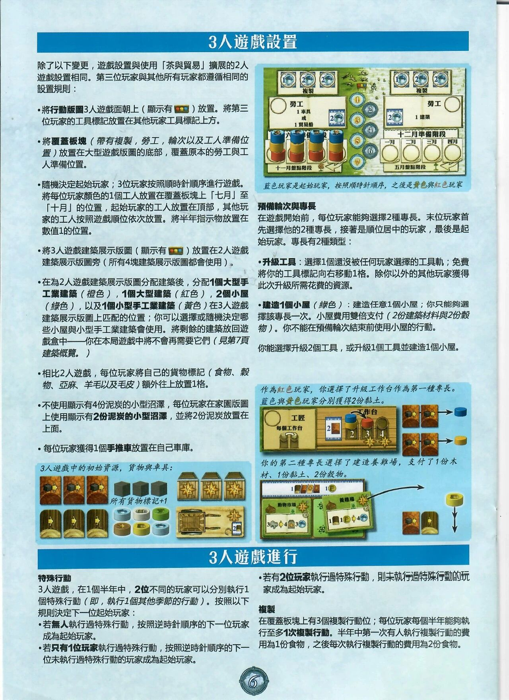
3人遊戲設置
除了以下變更,遊戲設置與使用「茶與貿易」擴展的2人遊戲設置相同。第三位玩家與其他所有玩家都遵循相同的設置規則:
- 將行動版圖3人遊戲面朝上(顯示有〔icon:紅黃藍三色圓點〕)放置。將第三位玩家的工具標記放置在其他玩家工具標記上方。
- 將覆蓋板塊(帶有複製,勞工,輪次以及工人準備位置)放置在大型遊戲版圖的底部,覆蓋原本的勞工與工人準備位置。
- 隨機決定起始玩家;3位玩家按照順時針順序進行遊戲。將每位玩家顏色的1個工人放置在覆蓋板塊上「七月」至「十月」的位置,起始玩家的工人放置在頂部,其他玩家的工人按照遊戲順位依次放置。將半年指示物放置在數值1的位置。
- 將3人遊戲建築展示版圖(顯示有〔icon:紅黃藍三色圓點〕)放置在2人遊戲建築展示版圖旁(所有4塊建築展示版圖都會使用)。
- 在為2人遊戲建築展示版圖分配建築後,分配1個大型手工業建築(橙色),1個大型建築(紅色),2個小屋(綠色),以及1個小型手工業建築(黃色)在3人遊戲建築展示版圖上匹配的位置;你可以選擇或隨機決定哪些小屋與小型手工業建築會使用。將剩餘的建築放回遊戲盒中——你在本局遊戲中將不會再需要它們(見第7頁建築概覽。)
- 相比2人遊戲,每位玩家將自己的貨物標記(食物、穀物、亞麻、羊毛以及毛皮)額外往上放置1格。
- 不使用顯示有4份泥炭的小型沼澤,每位玩家在家園版圖上使用顯示有2份泥炭的小型沼澤,並將2份泥炭放置在上面。
- 每位玩家獲得1個手推車放置在自己車庫。
3人遊戲中的初始資源,貨物與車具:
〔圖:泥炭板塊×3、木材圓片×3、車具板塊×3、貨物標記與車庫;圖內標注:所有貨物標記+1〕
(右欄插圖:覆蓋板塊遊戲照片)
圖內標注:複製(1、2、2)/ 勞工(1 車具 或 1 貿易船)/ 勞工(1 建築)/ 十二月準備階段(一月、二月、三月、四月)/ 十一月盤點階段 / 五月盤點階段 / 數字1-7
圖注:藍色玩家是起始玩家,按照順時針順序,之後是黃色與紅色玩家
預備輪次與專長
在遊戲開始前,每位玩家能夠選擇2種專長。末位玩家首先選擇他的2種專長,接著是順位居中的玩家,最後是起始玩家。專長有2種類型:
- 升級工具:選擇1個還沒被任何玩家選擇的工具軌;免費將你的工具標記向右移動1格。除你以外的其他玩家獲得此次升級所需花費的資源。
- 建造1個小屋(綠色):建造任意1個小屋;你只能夠選擇該專長一次。小屋費用雙倍支付(2份建築材料與2份穀物)。你不能在預備輪次結束前使用小屋的行動。
你能選擇升級2個工具,或升級1個工具並建造1個小屋。
〔示例框〕作為紅色玩家,你選擇了升級工作台作為第一種專長。藍色與黃色玩家分別獲得2份黏土。
〔圖:工具軌示例,圖內標注:工匠/每個工作台/工作台/2、3、4〕
〔示例框〕你的第二種專長選擇了建造養雞場,支付了1份木材、1份黏土、2份穀物。
〔圖:建築卡示例,圖內標注:動物市場/養雞場〕
3人遊戲進行
特殊行動
3人遊戲,在1個半年中,2位不同的玩家可以分別執行1個特殊行動(即,執行1個其他季節的行動)。按照以下規則決定下一位起始玩家:
- 若無人執行過特殊行動,按照逆時針順序的下一位玩家成為起始玩家。
- 若只有1位玩家執行過特殊行動,按照逆時針順序的下一位未執行過特殊行動的玩家成為起始玩家。
- 若有2位玩家執行過特殊行動,則未執行過特殊行動的玩家成為起始玩家。
複製
在覆蓋板塊上有3個複製行動位;每位玩家每個半年能夠執行至多1次複製行動。半年中第一次有人執行複製行動的費用為1份食物,之後每次執行複製行動的費用為2份食物。
〔6〕
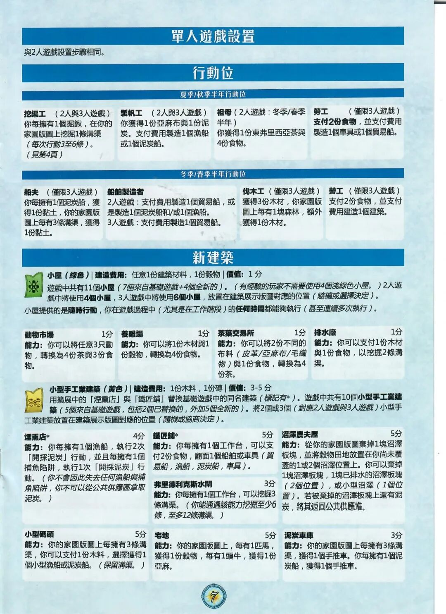
單人遊戲設置
與2人遊戲設置步驟相同。
行動位
夏季/秋季半年行動位
挖渠工(2人與3人遊戲)
你每擁有1個掘鍬,在你的家園版圖上挖掘1條溝渠(每次行動3至6條)。
(見第4頁)
製帆工(2人與3人遊戲)
你獲得1份亞麻布與1份泥炭。支付費用製造1個漁船或1個泥炭船。
祖母(2人遊戲:冬季/春季半年)
你獲得1份東弗里西亞茶與4份食物。
劈工(僅限3人遊戲)
支付2份食物,並支付費用製造1個車具或1個貿易船。
冬季/春季半年行動位
船夫(僅限3人遊戲)
你每擁有1個泥炭船,獲得1份黏土,你的家園版圖上每有3條溝渠,獲得1份黏土。
船舶製造者
2人遊戲:支付費用製造1個貿易船,或是製造1個泥炭船和/或1個漁船。
3人遊戲:支付費用製造1個貿易船。
伐木工(僅限3人遊戲)
獲得3份木材,你家園版圖上每有1塊森林,額外獲得1份木材。
劈工(僅限3人遊戲)
支付2份食物,並支付費用建造1個建築。
新建築
小屋(綠色)|建造費用: 任意1份建築材料,1份穀物|值: 1分
遊戲中共有11個小屋(7個來自基礎遊戲+4個全新的)。(有經驗的玩家不需要使用4個淺綠色小屋。)2人遊戲中將使用4個小屋,3人遊戲中將使用6個小屋,放置在建築展示版圖對應的位置(隨機或選擇決定)。
小屋提供的是隨時行動,你在遊戲過程中(尤其是在工作階段)的任何時間都能夠執行(甚至連續多次執行)。
動物市場 1分
能力: 你可以將任意3只動物,轉換為4份茶與3份食物。
養雞場 1分
能力: 你可以將1份木材與1份穀物,轉換為4份食物。
茶葉交易所 1分
能力: 你可以將2份不同的布料(皮革/亞麻布/毛織物)與1份食物,轉換為4份茶。
排水廠 1分
能力: 你可以支付1份木材與1份食物,以挖掘2條溝渠。
小型手工業建築(黃色)|建造費用: 1份木料,1份磚|值: 3-5分
用擴展中的「煙熏店」與「鐵匠舖」替換基礎遊戲中的同名建築(標記有\*)。遊戲中共有10個小型手工業建築(5個來自基礎遊戲,包括2個已替換的,外加5個全新的)。將2個或3個(對應2人遊戲與3人遊戲)小型手工業建築放置在建築展示版圖對應的位置(隨機或協商決定)。
煙熏店\* 4分
能力: 你每擁有1個漁船,執行2次「開採泥炭」行動,並且每擁有1個捕魚陷阱,執行1次「開採泥炭」行動。(你不會因此失去任何漁船與捕魚陷阱,你不可以從公共供應區拿取泥炭。)
小型碼頭 5分
能力: 你的家園版圖上每擁有3條溝渠,你可以支付1份木料,選擇獲得1個小型漁船或泥炭船。(保留溝渠。)
鐵匠鋪\* 5分
能力: 你每擁有1個工作台,可以支付2份食物,翻面1個船舶或車具(貿易船,漁船,泥炭船,車具)。
弗里德利克斯水閘 3分
能力: 你每擁有1個工作台,可以挖掘3條溝渠。(你能通過該能力挖掘至少6條,至多12條溝渠。)
宅地 5分
能力: 你的家園版圖上,每有1匹馬,獲得1份穀物,每有1頭牛,獲得1份亞麻。
沼澤農夫屋 5分
能力: 從你的家園版圖棄掉1塊沼澤板塊,並將穀物田地放置在你尚未覆蓋的1或2個沼澤位置上。你可以棄掉1塊沼澤板塊,1塊已排水的沼澤板塊(2個位置),或小型沼澤(1個位置)。若被棄掉的沼澤板塊上還有泥炭,將其返回公共供應堆。
泥炭車庫 3分
能力: 你的家園版圖上每擁有3條溝渠,獲得1個手推車。你每擁有1個泥炭船,獲得1個手推車。
〔7〕
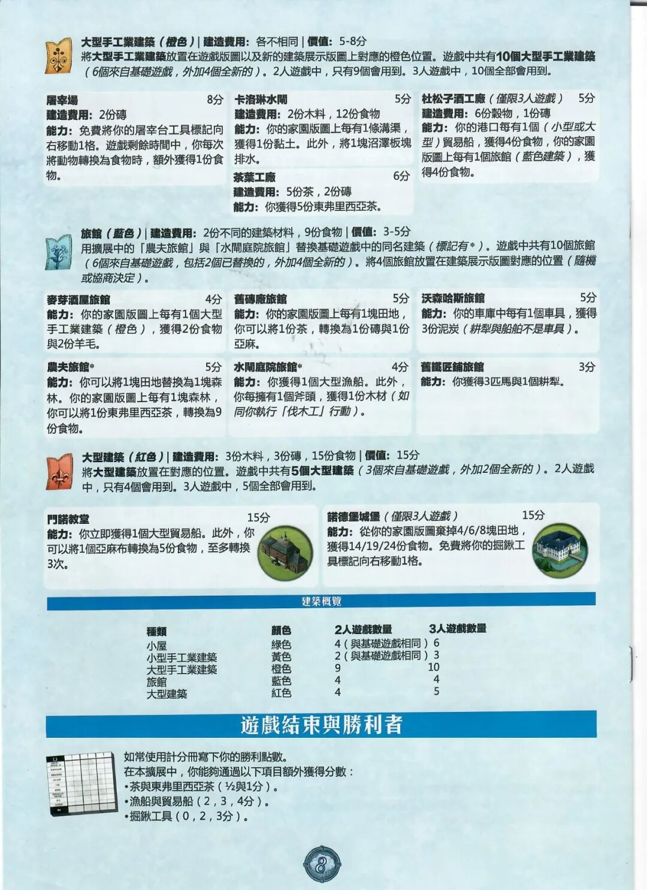
大型手工業建築 (橙色)|建造費用: 各不相同|價值: 5-8分
將大型手工業建築放置在遊戲版圖以及新的建築展示版圖上對應的橙色位置。遊戲中共有10個大型手工業建築(6個來自基礎遊戲,外加4個全新的)。2人遊戲中,只有9個會用到。3人遊戲中,10個全部會用到。
屠宰場 8分
建造費用: 2份磚
能力: 免費將你的屠宰台工具標記向右移動1格。遊戲剩餘時間中,你每次將動物轉換為食物時,額外獲得1份食物。
卡洛琳水閘 5分
建造費用: 2份木料,12份食物
能力: 你的家園版圖上每有1條溝渠,獲得1份黏土。此外,將1塊沼澤板塊排水。
茶葉工廠 6分
建造費用: 5份茶,2份磚
能力: 你獲得5份東弗里西亞茶。
杜松子酒工廠 (僅限3人遊戲) 5分
建造費用: 6份穀物,1份磚
能力: 你的港口每有1個(小型或大型)貿易船,獲得4份食物,你的家園版圖上每有1個旅館(藍色建築),獲得4份食物。
旅館 (藍色)|建造費用: 2份不同的建築材料,9份食物|價值: 3-5分
用擴展中的「農夫旅館」與「水閘庭院旅館」替換基礎遊戲中的同名建築(標記有\)。遊戲中共有10個旅館(6個來自基礎遊戲,包括2個已替換的,外加4個全新的)。將4個旅館放置在建築展示版圖對應的位置(隨機或協商決定*)。
麥芽酒屋旅館 4分
能力: 你的家園版圖上每有1個大型手工業建築(橙色),獲得2份食物與2份羊毛。
舊磚廠旅館 5分
能力: 你的家園版圖上每有1塊田地,你可以將1份茶,轉換為1份磚與1份亞麻。
沃森哈斯旅館 5分
能力: 你的車庫中每有1個車具,獲得3份泥炭(耕犁與船舶不是車具)。
農夫旅館\* 5分
能力: 你可以將1塊田地替換為1塊森林。你的家園版圖上每有1塊森林,你可以將1份東弗里西亞茶,轉換為9份食物。
水閘庭院旅館\* 4分
能力: 你獲得1個大型漁船。此外,你每擁有1個斧頭,獲得1份木材(如同你執行「伐木工」行動)。
舊鐵匠鋪旅館 3分
能力: 你獲得3匹馬與1個耕犁。
大型建築 (紅色)|建造費用: 3份木料,3份磚,15份食物|價值: 15分
將大型建築放置在對應的位置。遊戲中共有5個大型建築(3個來自基礎遊戲,外加2個全新的)。2人遊戲中,只有4個會用到。3人遊戲中,5個全部會用到。
門諾教堂 15分
能力: 你立即獲得1個大型貿易船。此外,你可以將1個亞麻布轉換為5份食物,至多轉換3次。
諾德堡城堡 (僅限3人遊戲) 15分
能力: 從你的家園版圖棄掉4/6/8塊田地,獲得14/19/24份食物。免費將你的掘鍬工具標記向右移動1格。
建築概覽
| 種類 | 顏色 | 2人遊戲數量 | 3人遊戲數量 |
| 小屋 | 綠色 | 4(與基礎遊戲相同) | 6 |
| 小型手工業建築 | 黃色 | 2(與基礎遊戲相同) | 3 |
| 大型手工業建築 | 橙色 | 9 | 10 |
| 旅館 | 藍色 | 4 | 4 |
| 大型建築 | 紅色 | 4 | 5 |
遊戲結束與勝利者
如常使用計分冊寫下你的勝利點數。
在本擴展中,你能夠通過以下項目額外獲得分數:
•茶與東弗里西亞茶(½與1分)。
•漁船與貿易船(2,3,4分)。
•掘鍬工具(0,2,3分)。
〔8〕